Testing of Metals
5
Learning Outcome
When you complete this learning material, you will be able to:
Discuss the common procedures and parameters for testing of metals.
Learning Objectives
You will specifically be able to complete the following tasks:
- 1. Explain the procedures and interpretation of tensile, hardness, and impact tests.
- 2. Explain how to monitor and test metals for creep, fatigue and corrosion.
- 3. Explain the causes and significance of welding discontinuities.
- 4. Explain visual inspection, and the procedures used.
- 5. Explain magnetic particle inspection and the procedures used.
- 6. Explain liquid penetrant testing and the procedures used.
- 7. Explain ultrasonic testing and the procedures used.
- 8. Explain radiography, the procedures used and how to interpret the results.
- 9. Explain acoustic emission testing and the procedures used.
- 10. Explain the methods of leak testing.
- 11. Explain the procedure for a proof test.
This page is intentionally blank, containing only three punch-hole marks on the right margin.
Objective 1
Explain the procedures and interpretation of tensile, hardness, and impact tests.
MATERIAL TESTING
Non-destructive Examination (NDE) is the testing of materials without destroying the integrity of the material or lowering its ability to perform its primary function. The pressure equipment industry uses a wide variety of NDE techniques that test the properties of materials. The most common NDE techniques are:
- • Hardness Testing
- • Visual Testing (VT)
- • Liquid Penetrant Testing (PT)
- • Magnetic Particle Testing (MT)
- • Radiographic Testing (RT)
- • Ultrasonic Testing (UT)
- • Acoustic Emission (AE)
- • Leak Testing (LT)
ASME Section V, Non-destructive Examination is a reference code that supports construction codes such as ASME Section I, III, IV, VIII (Div. 1 and Div. 2) and X. Some non-ferrous materials are used in power plant construction. For example, copper-based alloys for condenser tubing, copper for alternator windings and tin-based alloys for bearings, but the majority of components are made from iron-based or ferrous materials. The tests covered in this module are for ferrous materials.
Testing Definitions
In NDE, the misuse of the terms defect, discontinuity, flaw, indication, interpretation, and evaluation can create much confusion.
The following definitions are used in the module:
- • Flaw: An imperfection in the material that may or may not be harmful
- • Indication: A noticeable response to an NDE test that requires interpretation to determine its significance
- • Discontinuity: Any local variation in material continuity including changes in geometry, properties or composition, holes, cavities, cracks, or structure
- • Defect: A discontinuity or flaw, whose size, shape, type, location, or orientation creates a substantial chance of material failure. The discontinuity is detrimental to the integrity of the pressure equipment
- • Interpretation: A study to determine the cause of an indication (labeling or naming the discontinuity, i.e. cold lap, fatigue crack)
- • Evaluation: A judgment made based on codes, standards or engineering assessment on the significance of an indication. The judgment decides whether the indication is detrimental to the service life of the component under test
NDE Applications
In the pressure equipment industry, NDE techniques are used for testing materials for three types of defects:
- 1. Inherent defects created during the initial production of the material
- 2. Processing defects created during the processing/manufacturing of the pressure equipment
- 3. Service defects created in the equipment during service
There are four main benefits to NDE techniques, namely:
- • Safety
- • Cost savings
- • Service reliability
- • Material verification
Safety
- • Prevent accidents, damage to property, injuries and loss of life
Cost Savings
- • Eliminating faulty raw material reduces scrap, manpower required for rework and prevents waste
- • Repeat business is increased due to customer satisfaction
- • Manufacturing control provides continuous improvement because it monitors the process to pinpoint sources of trouble
- • Eliminating delivery of faulty products reduces servicing costs
- • Insurance costs are reduced by eliminating risks of equipment failure
Service Reliability
- • Faults can be sized for critical engineering assessment
- • Remaining life span of used equipment can be estimated - faults can be located before failure occurs
- • Service and operating costs are lower as testing can often be completed on line
- • Inspection intervals can be established for maximum benefit
- • Prevents unscheduled downtime
Material Verification
- • Differences in chemical properties can be identified
- • Differences in metallurgical properties can be identified
- • Material can be identified for sorting
- • Differences in zones of heat treating can be identified
- • Differences in physical properties can be identified
TENSILE TESTING
A tensile or tension test is the fundamental type of mechanical test performed on material. Tensile or tension tests are simple, relatively inexpensive, and fully standardized. By pulling on something, a tensile stress is put on the material. It is used to show how the material reacts to forces being applied in tension. As the material is stressed or pulled, the elongation and stress of the material are determined. Though a tensile test is simple and has been around for a long time, consideration is given to the specimen shape and dimensions and the choice of grips and faces to ensure valid results.
Specimen
The standard or specification being utilized, e.g., ASTM E8 or D638, defines the specimen's shape. Its shape is important to avoid having a break or fracture within the area being gripped. The standards specify the shape of the specimen ensuring the break occurs in the "gauge length" by reducing the cross sectional area or diameter of the specimen throughout the gauge length. Fig. 1 shows a specimen prior to testing. The testing device is illustrated in Fig. 2.
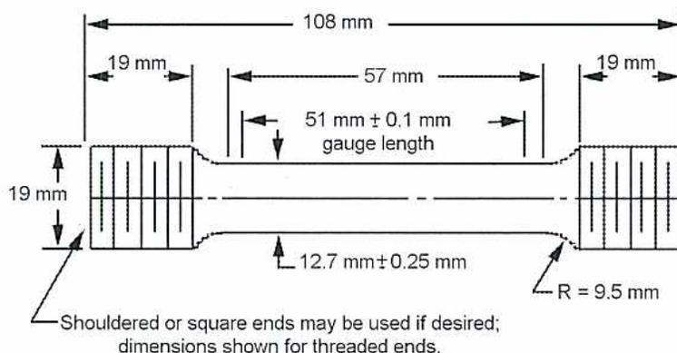
The diagram shows a tensile specimen with the following dimensions and features:
- Total length: 108 mm
- Width of end sections: 19 mm
- Length of end sections: 19 mm
- Length of the transition section: 57 mm
- Gauge length: \( 51 \text{ mm} \pm 0.1 \text{ mm} \)
- Width of the gauge section: \( 12.7 \text{ mm} \pm 0.25 \text{ mm} \)
- Radius of the fillet: \( R = 9.5 \text{ mm} \)
- End sections are threaded (indicated by vertical lines).
- Shouldered or square ends may be used if desired; dimensions shown for threaded ends.
Figure 1
Specimen Prior to Testing
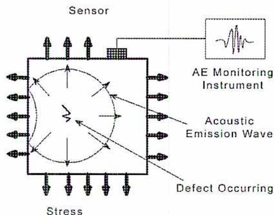
Figure 2
Testing Base and Actuator
Fig. 3 shows how the specimen deforms as more stress is applied to the specimen. This increases the stress in the gauge length because stress is inversely proportional to the cross-sectional area under load:
$$ \text{stress } (\sigma) = \frac{\text{Load}}{\text{cross sectional area}} $$
$$ \text{stress } (\sigma) = \frac{P}{a} $$
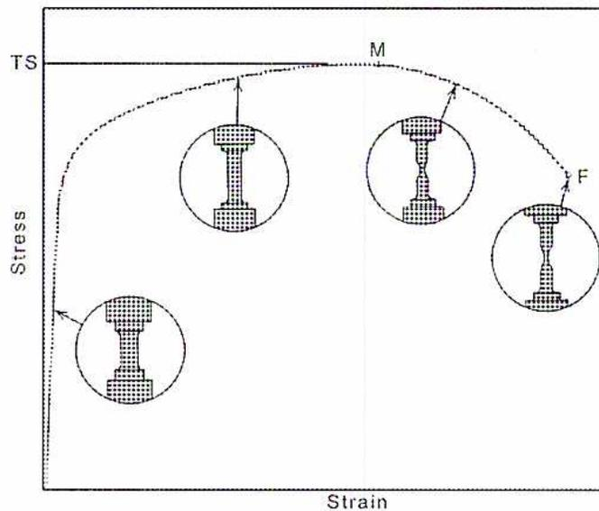
Figure 3
Tensile Stress Test
Modulus of Elasticity
In a tensile test, a sample is extended at constant rate, and the load needed to maintain this is measured. The stress ( \( \sigma \) ), calculated from the load, and strain ( \( \epsilon \) ), calculated from the extension, can be plotted as stress against strain as shown in Fig. 4.
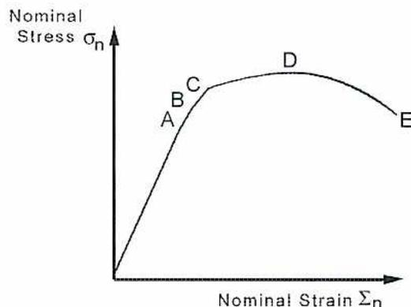
Figure 4
Graph Illustrating the Nominal Stress and Strain
Referring to Fig. 4, points on the graph are defined as:
(A) Limit of proportionality
The point beyond which Hooke's Law is no longer obeyed. This is the point at which slip (or glide) due to dislocation movement occurs in favourably oriented grains. The graph is linear up to this point and begins the transition from elastic to plastic deformation above this. Dependant on the material being tested, this point is poorly defined as in the graph above or well defined.
(B) Yield stress
The stress at which yielding occurs across the whole specimen. The stress required for slip in a particular grain varies depending on how the grain is oriented, so points A and B are not generally coincident in a polycrystalline sample. Polycrystalline is a material composed of variously oriented, small individual crystals. At this point, the deformation is purely plastic.
(C) Proof stress
A third point is sometimes used to describe the yield stress of the material. This is the point at which the specimen has undergone a certain (arbitrary) value of permanent strain, usually 0.2%. The stress at this point is then known as the 0.2% proof stress. This is used because the precise positions of A and B are often difficult to define and depend to some extent on the accuracy of the testing machine.
(D) Ultimate tensile strength (UTS)
The point at which plastic deformation becomes unstable and a narrow region (a neck) forms in the specimen. The UTS is the peak value of nominal stress during the test. Deformation will continue in the necked region until fracture occurs.
(E) Final instability point
This is the point at which fracture occurs is the failure point.
Strain
There are two main types of strain:
- • Elastic
- • Plastic
Elastic Strain
Elastic strain is the stretching of atomic bonds, and is reversible. Elastic strain can be related to the stress using Hooke's Law:
$$ \sigma = E\varepsilon $$
\( E \) = Young's Modulus
Plastic Strain
Plastic strain, or plastic flow, is irreversible deformation of a material. There is no equation to relate the stress to plastic strain.
The amount of stretch or elongation the specimen undergoes during tensile testing can also be found. This can be expressed as an absolute measurement in the change in length or as a relative measurement. Strain can be expressed in two different ways:
- • Engineering
- • True
Engineering Strain
Engineering strain is probably the most easily understood and the most common expression of strain used. It is the ratio of the change in length to the original length:
$$ \text{strain } (\varepsilon) = \frac{\text{extension}}{\text{original length}} $$
True Strain
True strain is similar but based on the instantaneous length of the specimen as the test progresses.
$$ \text{true strain } (\varepsilon) = \ln \left( \frac{L_1}{L_0} \right) $$ $$ L_1 = \text{Instantaneous length} $$ $$ L_0 = \text{the initial length.} $$
Ultimate Tensile Strength
One of the properties determined about a material is its ultimate tensile strength (UTS). This is the maximum load the specimen sustains during the test. The UTS may or may not equate to the strength at break. This is depending on what type of material is tested: brittle, ductile, or a substance that even exhibits both properties. Sometimes a material may be ductile when tested in a lab, but, when placed in service and exposed to extreme cold temperatures, it may transition to brittle behaviour.
HARDNESS TESTING
Hardness is a measurement of the resistance of a material to surface indentation. There is no absolute scale for hardness. Therefore, a number of tests have evolved for determining hardness, and each type of test has its own scale for hardness. These scales are arbitrary and express hardness purely quantitatively. This module describes four hardness tests that are based on a material's resistance to indentation.
Indentation Hardness Testing
Indentation hardness, or the resistance of a material to indentation, can be measured in two ways. The first method measures the depth of penetration or the area the indentation produces. This method utilizes a specified force. The second method measures hardness based on the load applied to the indenter. The most important criteria for an indenter is its
ability to provide impressions that are geometrically similar and well defined. The four common hardness testing methods, based on indentation methodology, are known as the:
- • Brinell
- • Rockwell
- • Vickers
- • Knoop
Brinell Hardness Testing Equipment
Brinell hardness testing equipment includes both laboratory and portable testing systems. Testers use a number of means to apply test loads, including dead weight, pneumatic, spring, hydraulic, and impact methods. A hydraulic Brinell hardness tester, shown in Fig. 5, uses the principle of a constant load applied for a period of time, using an indenter with a predetermined diameter.
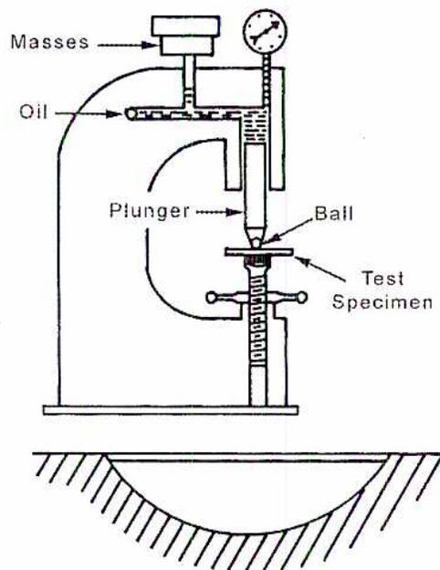
A schematic diagram of a Brinell hardness testing machine. It features a vertical frame with a plunger at the top connected to a set of masses. A hydraulic cylinder contains oil, and a ball indenter is positioned to press into a test specimen. The specimen is supported by a curved, hatched anvil. A dial gauge is attached to the top of the frame to indicate the applied load.
Figure 5
Brinell Hardness Testing Machine
The test is carried out using the following sequence of steps:
- 1. The specimen is placed on the anvil.
- 2. The load is applied.
- 3. The indenter penetrates the specimen for a given period of time from 10 to 30 seconds.
- 4. The round impression indication is measured.
- 5. Taking the mean diameter of the indication determines the hardness.
- 6. The Brinell hardness number is calculated.
The calculation of the Brinell hardness number ( BHN ) is based on the load applied and the dimension of the impression.
$$ BHN = \frac{L}{\pi \frac{D}{2} (D - \sqrt{D^2 - d^2})} $$
Where:
D = Indentor ball diameter, mm
d = Diameter of the indentation, mm
L = Load, kg
This calculation is not routinely completed. Tables are available that provide Brinell hardness numbers based on the load and the diameter of the actual impression. Tables have Brinell hardness numbers for loads ranging from 500 to 3000 kg in increments of 500 kg. The table used also indicates the indentor ball diameter (typically 10 mm).
The diameter of the actual indentation is measured with the aid of a microscope. Errors in determining the actual diameter are a result of incorrect instrument readings and the poor definition of the indentation boundary. The error in reading a Brinell microscope should not exceed 0.01 mm over the entire 7 mm scale.
Poor definition of the indentation boundary is a result of the material characteristics of each sample. Some materials develop a ridge around the indentation, extending above the original surface, as shown in Fig. 6(a). Other materials have no sharp line of demarcation between the surrounding surface and the indentation. This is due to a sinking or rounding off of one surface into another, as shown in Fig. 6(b).
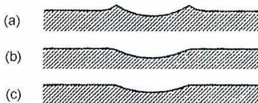
Figure 6
Typical Indentations
Rockwell Hardness Testing
Rockwell hardness testing is the most widely used method for determining hardness because it is simple to perform. Rockwell hardness testing equipment is used in laboratories, in automated systems for high production, and portable test units. The testers use either a \( 120^\circ \) diamond cone for the Rockwell B test, or a 1.6 mm diameter ball as the indenter for the Rockwell C test. The Rockwell hardness test involves applying two loads to a specimen and measuring the difference in depth of penetration between the light (minor) load and the heavy (major) load.
Rockwell Testing Method
In Rockwell testing, the minor load is 10 kg and the major load is 60, 100, or 150 kg, regardless of the type of indenter used. The minor load is applied first to zero the setting on the dial depth gauge; the major load is then applied for a definite time and released. The Rockwell hardness number is indicated on a dial gauge.
Rockwell test results are described using a numerical value related to the depth of indentation and a letter scheme that describes the conditions of the test. Fig. 7 illustrates the measurement of penetration depth using a diamond cone indenter.
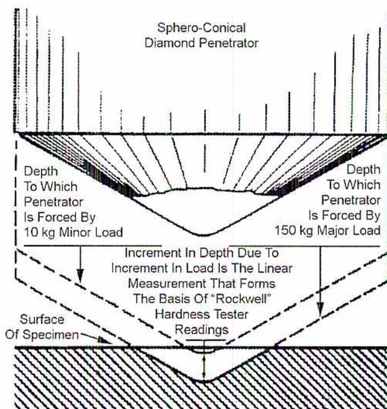
The diagram shows a cross-sectional view of a Sphero-Conical Diamond Penetrator indenting a specimen. The specimen's surface is labeled 'Surface Of Specimen'. The penetrator is shown at two stages of penetration: first, under a '10 kg Minor Load', and second, under a '150 kg Major Load'. The depth to which the penetrator is forced by the 10 kg minor load is indicated. The depth to which the penetrator is forced by the 150 kg major load is also indicated. The difference in depth between these two stages is labeled as the 'Increment In Depth Due To Increment In Load Is The Linear Measurement That Forms The Basis Of "Rockwell" Hardness Tester Readings'.
Figure 7
Rockwell Hardness Testing
The letters describe the scale symbol, type of indenter, and the major load. For example, every Rockwell test value is followed by the letter H for hardness, then R for Rockwell and, finally, the scale used either “B” or “C.”
Vickers Hardness Testing Method
The Vickers hardness test employs a 136° diamond pyramid as an indenter (square based pyramid with an angle of 136° between faces). The loads applied, for a period of 10 to 15 seconds, to the diamond indenter range from 1 to 120 kg with standard loads of 5, 10, 20, 30, 50, 100, and 120 kg.
The Vickers hardness number (HV) is provided by the following ratio:
$$ HV = \frac{\text{Load}}{\text{Indented Area}} $$ $$ HV = \frac{1.8544 L}{d^2} $$
Where:
\( d \) = Mean diagonal of indentation, mm
\( L \) = Load, kg
The indented area is calculated using the average readings of both diagonals. The diagonals of the indentation are measured using a micrometer microscope.
The Vickers hardness number is determined using a table for the appropriate load, identifying the average diagonal value, and reading the appropriate hardness value. On materials that are homogenous, the Vickers hardness number is independent of the test load.
Vickers hardness numbers are reported with the hardness value and the load used. For example, a hardness value of 820 found under a 50 kg load is reported as 820HV50.
The Vickers hardness testing method has a number of advantages over other types of hardness testers:
- • The method is accepted world wide
- • The indenter is accurate and shape is not distorted under loads
- • The impressions made are small, and thus limit damage to finished products
- • Light loads of 1 kg allow for the testing of thin materials
- • There is only one scale for the hardness of all materials
- • Damage to indenters is readily apparent as viewed under the microscope
- • The diagonal of a square impression can be measured more accurately than the diameter of a ball impression
Vickers Hardness Testing Guidelines
- • Sufficient time for the application of the full test load is required, 15 seconds is recommended
- • The spacing of indentations is important. A rule of thumb is that a distance of two and one half ( \( 2\frac{1}{2} \) ) times the length of the diagonal of the impression should be provided from the edge of the specimen or between any two impressions
- • Diagonals of indentations are measured with the impression centered in the field of the microscope
- • The micrometer microscope is calibrated against a stage micrometer
Table 1 shows a comparison of Brinell, Vickers and Rockwell hardness values.
Table 1
Brinell, Vickers and Rockwell Hardness Values
| Brinell | Vickers Hardness Number | Rockwell |
Tensile Strength (Approximate)
6.9 MPa |
||
|---|---|---|---|---|---|
|
Diameter (mm)
300 kg load 10 mm Ball |
Hardness Number |
C
150 kg load 120° diamond Cone |
B
100 kg load 283 mm. Diameter Ball |
||
| 2.35 | 682 | 886 | 64 | 337 | |
| 2.75 | 496 | 540 | 50 | 117 | 247 |
| 3.30 | 341 | 350 | 36 | 109 | 166 |
| 3.90 | 241 | 241 | 23 | 100 | 119 |
| 4.50 | 179 | 179 | 8 | 89 | 89 |
| 5.00 | 143 | 143 | 79 | 72 | |
| 5.70 | 107 | 107 | 64 | 56 | |
Knoop Microhardness Testing
The Knoop microhardness test utilizes a rhombic-based pyramidal diamond that produces a diamond shape with a long diagonal of seven times the short diagonal. The expected depth of the indentations is about 1/30th of the long diagonal axis. Typical testing loads are less than 500 g. Knoop microhardness testing is strictly confined to laboratory applications.
Industrial Application of Hardness Testing
Hardness testing is described in the following three categories:
- 1. Microhardness testing, using up to 200 g of load
- 2. Low-load hardness testing, using 200 g to 3 kg of load
- 3. Macrohardness, using greater than 3 kg of load
Brinell hardness testing falls in the macrohardness testing category. It can also be described as bulk hardness testing. Bulk hardness is an adequate description as Brinell hardness testing averages out small imperfections.
Rockwell hardness testing is a macrohardness test based on minor and major loads great than 3 kg. The diameter of the indentations commonly used is significantly smaller than those used with the Brinell indenter. The Rockwell hardness test is not considered a bulk hardness test.
The Vickers hardness test is considered either a low-load microhardness test or a macrohardness test. Test loads can range from 1g to 120 kg. Because of the diamond test point, the Vickers hardness test is used for testing hard materials with high loads and for measuring the hardness of small areas.
The Knoop hardness test is a microhardness test. It tests for the hardness of microconstituents of a matrix. Knoop microhardness testing is utilized in failure analysis of components and for the testing of extremely brittle materials.
Hardness Testing and Quality
Hardness testing, specifically indentation hardness testing, is a simple, inexpensive, non-destructive test for evaluating material properties during production.
In welding applications, hardness tests determine if the base and weld metal strengths are matched, and also provide indications of any effects the welding process may have on the HAZ (heat affected zone).
When materials are purchased, the manufacturing process influences the hardness of materials. Hardness testing ensures uniformity of heat treated components. Hardness tests are completed on materials that have been cold worked, quenched and tempered, or precipitation hardened. Mill test reports provide hardness readings and are used to determine the suitability of pressure component materials for their intended use.
Indentation hardness testing is used in the fabrication and repair of pressure components to identify the misuse of welding consumables or to identify fabrication techniques that require post-weld heat treatment. Hardness tests completed in the shop or in the field on pressure components are Brinell portable hardness tests.
The Brinell hardness test is a bulk hardness test and therefore it is not practical for use on the heat affected zone (HAZ) of weldments produced in the shop or field. Portable Brinell hardness testing devices test the weldments' macrohardness.
To effectively test the hardness of a weld, it is advisable that the Welding Procedure Specification (WPS) be supported by a Procedure Qualification Report (PQR) that has had hardness tests completed by the Rockwell Superficial Hardness or Vickers Diamond Pyramid Hardness testing technique.
For butt welds, traverse hardness testing from the base metal through the HAZ, weld metal, and ending in the adjoining base metal, is recommended. The spacing of the indentations is as described in the guidelines for testing with the Rockwell or Vickers
hardness techniques. A number of traverses across the cross-section of the weld at different elevations are necessary to provide a representative sample of the weld.
The acceptance criteria are established by the end user's specifications. For carbon steels that are subject to sulphide stress cracking (SSC), the recognized acceptance criteria is the National Association of Corrosion Engineers MR-01-75 Standard, which states a maximum hardness of 22 HRC for carbon steel welding procedure specifications.
IMPACT TESTING
One property of metals that must be tested is the impact toughness which is the ability of a metal to resist fracture under the effect of shock loading. It is the energy required to break a piece of metal of standardized shape with a cross-sectional area of 1 cm 2 . A test called the Charpy test is used to measure a metal's impact toughness.
The metal to be tested is formed into a rectangular bar, with a 45 degree V-shaped notch taken out of it. This is then carefully placed on the apparatus' anvils with precision tongs. Then the bar is struck, behind the notch, with a striker mounted on a pendulum. The height to which the pendulum rises is a measure of the energy absorbed in the fracture. Charpy impact testing is illustrated in Fig. 8.
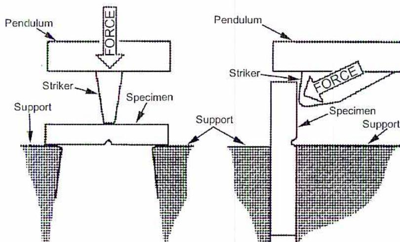
The diagram illustrates the Charpy impact testing process in two stages. On the left, a pendulum arm is shown at its starting position, with a striker at the top. A vertical arrow labeled 'FORCE' points downwards towards a specimen. The specimen is a rectangular bar with a V-shaped notch, supported by two anvils. On the right, the pendulum arm has swung down and struck the specimen. A diagonal arrow labeled 'FORCE' indicates the impact. The specimen is shown breaking at the notch. Labels include 'Pendulum', 'Striker', 'Specimen', and 'Support'.
Figure 8
Charpy Impact Testing
Precise details of the type of specimen and the procedure for the test are described in written standards. One complication is that there are several different standards - the ISO (International Organization for Standardization), the ASTM (American Society for Testing and Materials) standard as well as several national European standards. The metrological parameters of the striker, machine and test pieces are slightly different so the results from these tests are subtly different and therefore difficult to compare.
The notch behaviour of the face-centred cubic metals and alloys, a large group of nonferrous materials and the austenitic steels can be judged from their common tensile properties. If they are brittle in tension, they will be brittle when notched. If they are ductile in tension, they will be ductile when notched, except for unusually sharp or deep notches (much more severe than the standard Charpy specimens). Even low temperatures do not alter the notch behaviour of these materials. In contrast, the behaviour of the ferritic steels under notch conditions cannot be predicted from their properties as the tension test reveals.
Some metals that display normal ductility in the tension test may break in brittle fashion when tested or used in the notched condition. Notched conditions include restraints to deformation in directions perpendicular to the major stress, or triaxial stresses, and stress concentrations. It is in this field that the Charpy tests prove useful for determining the susceptibility of steel to notch-brittle behaviour though they cannot be directly used to appraise the serviceability of a structure.
Objective 2
Explain how to monitor and test metals for creep, fatigue and corrosion.
CREEP
Certain materials, such as lead piping, undergo slow and continuous deformation with time when subjected to stress. Rupture of a ferrous material occurs when it is subjected to a constant stress at elevated temperatures for a sufficiently long time, even though the load applied is considerably lower than that necessary to cause rupture in the short time tensile test at the same temperature.
The creep rupture test is used to determine both the rate of deformation and the time to rupture at a given temperature. The test piece, maintained at constant temperature, is subjected to a fixed static tensile load. The deformation of the test sample is measured during the test and the time to rupture is determined. The duration of the test may range from 1000 to 10 000 hours, or even longer. A diagrammatic plot of the observed length of the specimen against elapsed time is often of the form illustrated in Fig. 9.
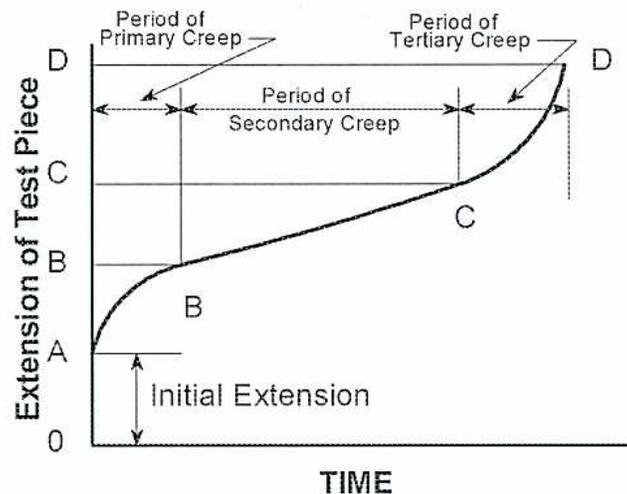
Figure 9
Typical Creep Curve for Steel
Referring to Fig. 9, the curve representing creep is divided into three stages. It begins after the initial extension (0-A), which is simply the measure of deformation of the specimen the loading causes. The magnitude of this initial extension depends on test conditions, varying with load and temperature and normally increasing with increases in
temperature and load. The first stage of creep (A-B), called primary creep, has a decreasing rate of deformation during the period.
The second stage (B-C), called secondary creep, has an extremely small variation in rate of deformation. This period is essentially one of constant rate of creep. The third stage (C-D), called tertiary creep, has an accelerating rate of deformation leading to fracture. Some alloys, however, display very limited or no secondary creep and spend most of their test life in tertiary creep.
To simplify the practical application of creep data, it is customary to establish under laboratory conditions two values of stress (for a material at a temperature) that produce two corresponding rates of creep (elongation): 1.0% per 10 000 and 100 000 hours, respectively.
For any specified temperature, several creep rupture tests are run under different loads. The creep rate during the period of secondary creep is determined from these curves and is plotted against the stress. When these data are plotted on logarithmic scales, the points for each specimen often lie on a line with a slight curvature. The minimum creep rate for any stress level can be obtained from this graph, and the curve can also be extrapolated to obtain creep rates for stresses beyond those for which data are obtained. The shape of the creep curve depends on the chemical composition and microstructure of the metal as well as the applied load and test temperature.
In general, rapid rates of elongation indicate a transgranular (ductile) fracture and slow rates of elongation indicate an intergranular (brittle) fracture. As a rule, surface oxidation is present when the fracture is transgranular, and visible intercrystalline oxidation may or may not be present when the fracture is intergranular. Because the presence of intercrystalline oxides produces discontinuities, the time to rupture at a given temperature-load relationship may be appreciably reduced. A complete creep rupture test program for a given steel consists of a series of tests at constant temperature with each specimen loaded at a different level. Because tests are not normally conducted for more than 10 000 hours, extrapolation is used to determine longer rupture times. The ASME Boiler and Pressure Vessel Code Committee use several methods of extrapolation. These depend on the behavior of the particular alloy for which design values are being established and on the extent and quality of the database that is available. Several informative discussions on these methods may be found in ASME publications.
Design data is usually given as a series of curves for constant creep strain (0.01-0.03%, etc.), relating stress and time for a given temperature. It is important to know whether the data used are for the secondary stage only or whether they also include the primary stage.
In designing plants that work at temperatures well above atmospheric temperatures, the designer must consider carefully what possible maximum strains he can allow and what the final life of the plant is likely to be. The permissible amounts of creep depend largely on the component and service conditions. Typical examples for steel are shown in Table 2.
Table 2
Permissible Creep Values
|
Rate of Creep,
mm/min |
Time,
Hours |
Maximum
Permissible Strain, mm |
|
|---|---|---|---|
| Turbine rotor wheels, shrunk on shafts | \( 10^{-11} \) | 100 000 | 0.0025 |
| Steam piping, welded joints, boiler tubes | \( 10^{-9} \) | 100 000 | 0.075 |
| Superheated tubes | \( 10^{-8} \) | 20 000 | 0.5 |
Monitoring for Creep Damage
Superheater and reheater tubing are critical components. Creep is a function of temperature, stress and operating time. Higher operating temperature and other damage mechanisms, such as erosion and corrosion that cause tube wall thinning and increased stresses reduce the creep life of superheater tubes. Excessive stresses associated with thermal expansion and mechanical loading can also occur leading to tube cracks and leaks independent of the predicted creep life.
Water-cooled tubes operating at or below saturation temperature are not subject to significant creep. Monitoring of the superheater tubes includes visual inspection, ultrasonic thickness testing and tube sample analysis. Problems due to erosion, corrosion, expansion, or excessive temperature can generally be located with visual examination.
High temperature steam-carrying headers are a major concern because they have a finite creep life and their replacement cost is high. The high temperature headers are the superheater and reheater outlets which operate at a temperature of 485°C or higher. Headers operating at high temperature experience creep under normal conditions and also experience thermal and mechanical fatigue. Creep stresses in combination with thermal and mechanical fatigue stress lead to early failures.
There are three factors influencing creep fatigue in superheater high temperature headers: combustion, steam flow and boiler load. Heat distribution within the boiler is not uniform: burner inputs can vary, air distribution is not uniform; slagging and fouling can occur. The net effect of these combustion parameters is variations in heat input to individual superheater and reheater tubes. When combined with steam flow differences between tubes within a bank, significant variations in steam temperature entering the header can occur. Changes in boiler load further aggravate the temperature difference between the individual tubes and the header. As boiler load increases, the firing rate must increase to maintain pressure. During this transient, the boiler is temporarily over fired to compensate for the increasing steam flow and decreasing pressure. During load decreases, the firing rate decreases slightly faster than steam flow in the superheater with a resulting decrease in tube outlet temperature relative to that of the header. As a consequence of these temperature gradients, the header experiences localized stresses much greater than those associated with steam pressure and can result in cracks forming in the ligament.
In addition to the effects of temperature variations, the external stresses associated with header expansion and piping loads is evaluated. Header expansion can cause damage to cycling units which causes fatigue cracks at support attachments, torque plates, and tube stub to header welds. Steam piping flexibility can cause transmission of excessive loads to the header outlet nozzle. These stresses cause externally initiated cracks at the outlet nozzle to header saddle weld.
In Situ Monitoring
Monitoring of high temperature superheater tubes and headers should include a combination of NDE techniques which are targeted at the welds where cracks are most likely to develop (stress raisers.) Stress raisers are defined as the flaws having the ability to amplify an applied stress in the locale.
Creep of the header causes it to swell and the diameter is measured at several locations on the header and the outlet nozzle. To examine the header for creep damage, metallographic replication is performed. This test is the most effective and is done on any high temperature header. Ideally, the evaluation corresponds to the hottest location along the header.
Metallographic Replication
Metallographic replication is used to study the grain microstructure of a component without taking samples from the component. This method is used when repeated observations are required. One method used for metallographic replication is illustrated in Fig 10.
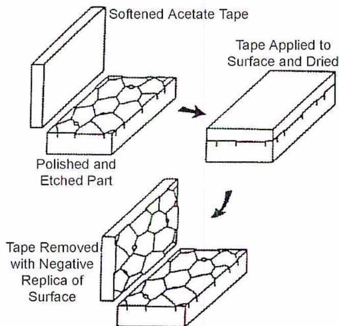
The diagram illustrates the metallographic replication process in three sequential steps:
- Top Left: A block labeled "Polished and Etched Part" shows a surface with a hexagonal grain pattern. A piece of "Softened Acetate Tape" is shown being applied to this surface.
- Top Right: An arrow points to the next step, labeled "Tape Applied to Surface and Dried". The tape is now flat against the surface, capturing the grain structure.
- Bottom: A curved arrow points to the final step, labeled "Tape Removed with Negative Replica of Surface". The tape is peeled back, showing a negative (reversed) image of the original grain structure on its underside.
Figure 10
Metallographic Replication
The objective is to reproduce as faithfully as possible the surface topography of the specimen on to an acetate film which can then be examined under a microscope. The surface of the specimen is cleaned of surface oxides to the bare metal. The metal is polished with a series of grits and diamond pastes to achieve a scratch free surface and then etched with 2 – 5% Nital. Nital is a 5% solution of nitric acid in absolute ethyl or methyl alcohol, used for the general etching of normal carbon steels. A cellulose acetate film is softened by soaking one side of the film with acetone and immediately applying the softened film to the etched surface and pressing the film firmly into place. After approximately 20 minutes the film hardens and may be carefully peeled from the metal and examined in the laboratory under a microscope. To improve the contrast, the side of the film which was not in contact with the metal is placed against a black surface. The grain boundaries are studied to ascertain the amount of carbide spheroidization and cavities that have formed. The films are kept and compared at each outage. Typical cavity assessments from microstructure are shown in Fig. 11.
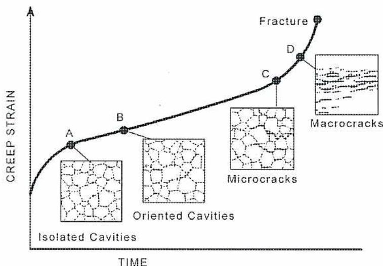
The figure is a line graph with 'CREEP STRAIN' on the vertical y-axis and 'TIME' on the horizontal x-axis. A curve starts at the origin and rises, eventually leading to a point labeled 'Fracture'. Along the curve, four points are marked: A, B, C, and D. Each point is associated with a microstructural diagram showing the state of the material at that time. Point A shows 'Isolated Cavities'. Point B shows 'Oriented Cavities'. Point C shows 'Microcracks'. Point D shows 'Macrocracks'.
Figure 11
Cavity Assessment
Action required from the diagram.
- A – No action required at this stage
- B – Schedule regular metallographic replication testing
- C – Limit the service of the component and schedule repairs
- D – Repair immediately as failure is imminent
Limitations of this method are:
- • The area to be monitored must be accessible
- • The same area of the tube or header is monitored each time to ensure an accurate record.
- • The surface temperature of the tube or header is comfortable to the touch. If it is too hot, then the cellulose acetate film dries too fast and does not have time to
penetrate between the grains. If it is too cold, the water content in the Nital affects the surface
FATIGUE
Metals undergoing high temperature service may also be subject to fatigue. Failure may arise after exposure to cycles of alternating stress, with or without the superimposition of a mean stress. Although it is the most common cause of metal failure in general engineering, it is rare in a power plant. This is because it is possible to design away from high levels of alternating stress, and that the predominant failure mechanism at high temperatures is creep and not fatigue. In a power plant, it is possible to encounter situations that are classified as thermal fatigue . In these the frequency of straining is given by the number of stops and starts endured during the full life of the plant, (say 5 000 to 10 000). Fig. 12 is an example of the original design of reinforcing ring and a replacement preformed drum end forging to eliminate cracking found in a boiler drum.
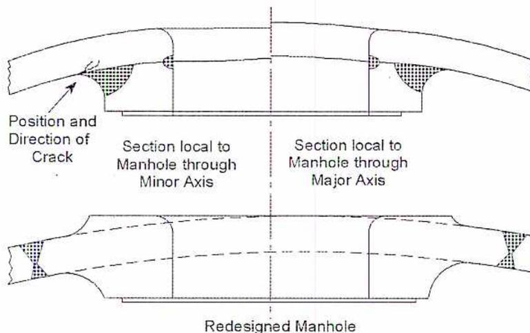
Figure 12
Manhole Reinforcement Changes
CORROSION
Good mechanical designs that minimize cracks crevices and high stress zones reduce the likelihood of accelerated corrosion attack on the waterside of a boiler. Corrosion occurs in a boiler and is allowed for in the design.
Most metals form an oxide or hydroxide corrosion film when exposed to water. This oxide layer acts as a coating on the metal and protects the metal from most types of corrosion. Boiler water treatments are designed to stabilize the protective oxide films so corrosion decreases with time. The metal losses associated with protective oxide films are uniform and occur at a predictable rate. This known rate of metal loss is the corrosion allowance designed in the vessel.
Corrosion of metal in industrial systems is complex and takes many different forms. The result of all corrosion is the loss of strength of the material and the structure. Understanding the various forms and combinations of corrosion is essential to determining the importance of each and to finding the most appropriate technologies for detection and characterization of corrosion.
Technology Applications
The areas where corrosion occurs, the materials in which it occurs, and the conditions under which it occurs combine to make the inspection for and detection of corrosion a difficult matter. All industrial systems experience some sort of corrosion and there are certain known problem areas.
The typical process of finding and identifying corrosion begins with visual inspection. Any damage that can be observed by visual means requires closer inspection. Field inspection using other means usually entails eddy current and/or ultrasonic inspection . These inspections can be accomplished during routine maintenance without impacting operational availability. If additional inspection is necessary, specialists conduct the inspection under controlled conditions, such as in a protected space or in an NDE laboratory.
Factors affecting corrosion are: the type of material selected for the application, the heat treatment of the material, the environment of the application, and the presence of any contaminants in the material itself. Table 3 summarizes the types of corrosion that can damage structures and their characteristics.
Table 3
Corrosion Types and Characteristics
| Corrosion | Cause | Appearance | By-Product Type |
|---|---|---|---|
| Uniform Attack | Exposure to corrosive environment | Irregular roughening of the exposed surface | Scale, metallic salts |
| Pitting | Impurity or chemical discontinuity in the paint or protective oxide coating | Localized pits or holes with cylindrical shape and hemispherical bottom | Rapid dissolution of the base metal |
| Crevice | Afflicts mechanical joints, such as coupled pipes or threaded connections. Triggered by local difference in environment composition (Oxygen concentration) | Localized damage in the form of scale and pitting | Same as scale and pitting |
| Galvanic Corrosion | Corrosive condition caused by contact of different metals | Uniform damage, scale, surface fogging or tarnishing | Emission of mostly molecular hydrogen gas in a diffused form |
| Stress Corrosion Cracking | Mechanical tensile stresses combined with chemical susceptibility | Micro-macro-cracks located at shielded or concealed areas | Initially produces scale-type indications. Ultimately leads to cracking |
|
Caustic Attack.
(Grooving or Gouging) |
Concentration of salts in
high heat zones found in upper surfaces of incline steam generating tubes |
Wide smooth groove
generally free of deposits |
Rapid dissolution of
the base metal |
| Acid Attack | Low pH in boiler water |
Irregular roughening of
the exposed surface |
Rapid dissolution of
the base metal |
|
Intergranular or
Exfoliation |
Presence of strong
potential differences in grain or phase boundaries |
Appears at the grain or
phase boundary as uniform damage |
Produces scale type
indications at smaller magnitude than stress corrosion |
| Erosion-Corrosion |
Flowing particles, found
at restrictions, bends or disruptions in the fluid stream damage protective films |
Appears as gullies,
grooves or pits (cavitation damage) |
Rapid dissolution of
the base metal |
Corrosion Detection
Corrosion detection is a subset of the larger fields of Non-Destructive Evaluation (NDE). Many of the technologies of NDE lend themselves to the detection, characterization and quantification of corrosion damage. Table 4 summarizes the major advantages and disadvantages of corrosion detection technologies.
Table 4
Summary of Corrosion Detection NDE Technologies
| Technology | Advantages | Disadvantages |
|---|---|---|
| Visual |
|
|
| Enhanced Visual |
|
|
| Eddy Current |
|
|
| Ultrasonic |
|
|
| Radiography |
|
|
| Thermography |
|
|
| Robotics and Automation |
|
|
It is also important to know if corrosion does not exist. If deep corrosion could be detected reliably and efficiently, the substantial costs associated with shutdowns and inspections would be dramatically reduced. Maintenance plans typically call for shutting down and inspection of equipment to determine their condition. If an NDE method could accurately determine the level of corrosion, including the probability that there is no corrosion present, then the huge costs associated with shutdowns could be avoided. Providing an accurate assessment of the condition of equipment supports the concept of condition-based maintenance.
Objective 3
Explain the causes and significance of welding discontinuities.
WELDING DISCONTINUITIES
The objective of good welding practice is to produce weldments with the integrity to ensure they perform adequately for the service intended. However, even with the very best of efforts, discontinuities occur.
Weld discontinuities, which may lead to defects, are caused by one or more of the following:
- • Departures from qualified procedures
- • Altering weld designs
- • Substituting or using defective materials
- • Substituting or using defective electrodes
Any one of these factors produces weld defects which cause a structure to fail in service. This has costly and sometimes disastrous results for the owner/operator and may jeopardize public safety.
The identification, evaluation, and disposition of weld discontinuities is an important welding activity. Visual identification of imperfections in welds is the first step in welding inspection and can usually reveal 80% of weld imperfections. With the aid of non-destructive techniques such as dye penetrant, magnetic particle, radiographic, and ultrasonic testing, the location and size of most defects the human eye cannot detect are determined.
To evaluate weld imperfections, the inspector judges whether or not the discontinuity is likely to become a defect leading to failure. This requires experience and knowledge of the flaws associated with a particular welding process and procedure, the metallurgy of the base metals and filler metals used, and the design of the weld joint. Evaluation also involves the use of specifications, standards, and codes which provide acceptance and rejection criteria for types of weld discontinuities.
Evaluation of weld discontinuities leads to disposition or a decision as to whether the weldment is acceptable, requires rework, or is unsuitable for the service intended and must be removed. Personnel involved in inspection may not be involved in the final disposition decisions, especially when these decisions are of a critical nature requiring an engineering assessment.
Welding Terminology
The communication of information from the personnel involved in the inspection and evaluation of weld discontinuities to the personnel who make decisions on redesign, repair, and rework of welded structures is made in a common technical language that all understands and accept. Industry specific and shop language are still used but may not be technically precise. It is recommended that welding specialists and those involved with evaluating welds use standard terminology.
Organizations and authorities involved in welding technology and science have developed terminology and classification systems to identify weld discontinuities and to describe the criteria used to evaluate and dispose of weld discontinuities.
Although there is some variation associated with industry specific terminology, there is broad agreement in the welding industry on the need for standardization of welding terms. Most welding codes use terminology that is standard for the industry. Most codes include a definitions section where departures from standard terms are identified and described.
The definitions and terms used are referenced to the ANSI/AWS Standard Welding Terms and Definitions A 3.0-89 , except where noted. The definitions provided in this module are those which the pressure containing and piping industries accept as the norm.
The terms defect , discontinuity , fault , flaw , and imperfection require definition. They all refer to inconsistencies in weld integrity, but are often misunderstood and used incorrectly.
Defect: A discontinuity or flaw whose size, shape, type, location, or orientation creates a substantial chance of material failure. The discontinuity is detrimental to the integrity of the pressure equipment.
Discontinuity: Any local variation in material continuity; including changes in geometry, properties of composition or structure, holes, cavities, or cracks.
Fault: The word "fault" is often used to denote defect. However, it can also be interpreted to mean an imperfection or flaw. The word fault is not included in the ANSI/AWS Standard Welding Terms and Definitions . Because the term lacks definition in a welding sense, it should not be used. Rather, the terms discontinuity, defect, and flaw are precise and should be used.
Flaw: An imperfection in the material that may or may not be harmful.
Imperfection: This term is used extensively in some codes; for example, Chapter V of ANSI/ASME B31.3 Chemical Plant and Petroleum Refinery Piping . It is not defined in the ANSI/AWS Standard Welding Terms and Definitions , but because it is used in a major code it should be understood to have the same meaning as flaw.
Classes of Discontinuities
Weld discontinuities are usually grouped into broad categories. One method is to group discontinuities according to causes. One major authority relates weld defects to one of the following three causes:
- • Weld procedure
- • Weld design
- • Metallurgical causes
However, before examining causes of defects, first identify and describe discontinuities. For this purpose, it is useful to group discontinuities into types that provide an organized approach to their identification. This module uses the system of dividing discontinuities into three broad classes:
- • Dimensional
- • Structural
- • Base metal properties
Dimensional Discontinuities
Dimensional discontinuities relate to any inconsistencies or departures from specified dimensions in the weld, weld joint, or parent metal. Also included in this general category are welds with imperfect shapes or unacceptable contours, including undercut, underfill, and overlap.
Structural Discontinuities
Structural discontinuities are flaws in the weld deposit or heat affected zone. The flaw's potential for failure is directly related to its shape and location in the weld. Planar defects, such as cracks and lack of fusion, are sharp and pointed and create severe notching and high potential for failure. Pores and non-metallic inclusions are usually rounded and pose less potential for failure.
Base Metal Discontinuities
Base metal discontinuities are deficiencies in the chemical, physical, or mechanical properties of the base metals which may contribute to a defect in the weldment. Base metal discontinuities arise mainly from the production of the metal and its subsequent processing and manufacturing. When a metal is produced, all of the data relating to its chemical composition, method of manufacture, heat treating, mechanical properties (such as tensile, yield, and impact properties), relative hardness, and ductility are given on a document to verify its standard of quality.
Even though production quality standards are high, metals that do not meet the required chemical composition standards can sometimes be delivered to the fabricator. Heat treating reduces impact or other mechanical properties. In the rolling, forging, and casting operations which follow the production of the metal, base metal imperfections such as laminations, laps and seams, or casting defects find their way into the product and cause defects in the weldment.
Defects in Weld Metals
Discontinuities that occur in welds create conditions which lead to failure in service. Weld strength is the property most affected by weld defects. Planar- type defects can cause rapid propagation of cracking through a weldment.
Discontinuities that create notching (abrupt changes in the contour of the weld where it fuses to the base metal) can be sites for fatigue failure. Fatigue failure in welded joints is associated with cyclical loading of the joint, such as that caused by vehicular traffic over a bridge, which creates many reversals of stress at the weld. Notches can reduce the fatigue resistance of welded joints and cause failure even though the yield strength of the original base metal was never exceeded. Spherical type defects, although not as serious, do create voids, displace weld metal, and reduce the intended volume of deposited weld metal. Failure to fill a joint or melting away of the base metal causes a reduction of the through thickness of the base metal.
Inappropriate chemical properties can cause a weldment to lose impact and tensile strength in a very hot or cold environment. Failure to match base metal and electrodes correctly can cause a loss of resistance to corrosion at the surface of a metal.
Defects in Weld Joints
There are five basic weld joints:
- • Butt
- • Tee
- • Lap
- • Edge
- • Corner
Even though the weld deposit forming the joint may be sound, a weld failure may occur because the joint has some undesirable features. Highly restrained tee and corner joints, unless properly designed, are sites for weld failure. Misaligned butt joints can also be areas of high stress. Steep transitions between thick and thin lapped material can create areas of high stress.
The degree of weld quality possible is not the same as the degree of weld quality necessary. The function imposed on the weldment determines the required degree of weld quality. Welds designed for the pressure containing industry must conform to high standards because of potential danger to the public from failure in service.
Objective 4
Explain visual inspection and the procedures used.
Any form of inspection is based upon an initial visual assessment of the geometry of the component and the type and nature of the defect which is likely to be present. Visual inspection is the most widely used technique for surface inspection, alignment of mating surfaces, and evidence of leaking.
Visual inspection ranges from the use of the naked eye to remote visual examination with electronic video systems. For remote visual examination, the system used must have a resolution capability at least equivalent to that obtained with direct visual observation. Direct visual examination may be completed with the aid of mirrors, magnifying lenses, and artificial illumination. The criteria for conducting a visual examination are:
- • Access allowing placement of the eye within 610 mm of the surface being examined
- • The angle of view must not be less than 30 degrees to the surface being inspected
- • A minimum illumination of 162 lux (15 foot candles)
- • For study of small anomalies a minimum illumination of 538 lux (50 foot candles) is required
- • Personnel capable of reading standard J1 letters on a standard Jaeger eye test chart
The ASME Section V Article 9: Visual Examination sets out the procedure requirements for an authorized inspector to follow if the Code Section requires a visual examination to be completed on the component.
Requirements
When the referencing Code sections require, the examination is performed in accordance with a written procedure the manufacturer prepares. The manufacturer makes available to the authorized inspector the procedure and a list of the examinations to be performed. The procedure includes at least the following:
- • How the examination is performed
- • Type of surface condition and criteria for surface cleaning
- • Cleaning instructions or reference to a cleaning procedure
- • Methods and/or tools used for surface preparation
- • Whether direct or remote viewing is used
- • Special illumination, instruments, or equipment used
- • Sequence of performing the operation, when applicable;
- • Data to be tabulated
- • Report forms or statement of examination results
Procedures may be general or specific for a certain application. The procedure contains or refers to a report of the test method used to demonstrate the procedure's adequacy.
Techniques used are direct viewing, remote viewing, and translucent examination. Specific requirements for each technique are provided in the ASME Section V, Article 9.
When the ASME Code Section requires, a written report is filled out and maintained.
Objective 5
Explain magnetic particle inspection and the procedures used.
MAGNETIC PARTICLE INSPECTION
This method is valuable for the detection of cracks present at the surface of a component made from a ferromagnetic material. The range of ferromagnetic materials includes: cast irons, all kinds of steel and its alloys with the exception of austenitic steels. The method is based on the fact that the faces of a crack tend to form north and south poles if a magnetic flux is established in the component. This flux may be induced using a permanent magnet or an electromagnet, causing current flow through the component or by wrapping coils around it and then passing a current through the coils. If the system is arranged so that the crack interrupts the flux lines, the application of either dry iron powder or iron powder in suspension in a liquid may reveal the crack. The particles of iron are attracted to the poles formed at the crack which is delineated as a black line.
AC transformers are often used to supply the necessary flux when searching for surface defects. Heavy DC currents, which produce a flux below the surface of the material, can be used to indicate subsurface defects to a depth of approximately 4 mm.
Magnetic Particle Examination
ASME Code Section V Article 7 describes the requirements and methodology for the performance of the magnetic particle examination test method. Magnetic particle examination is a widely used by the ASME Code and is referenced as a requirement in many Code Sections. Article 25 contains SE-709, a reference standard and users should consult it when establishing their test procedures. Also, when a referencing Code Section specifies Article 7, the requirements of Article 1 apply. In some cases, the referencing Code Section alters the Article 1 and Article 6 requirements. It is important to review the referencing Code Section requirements when establishing the test procedure. Article 7 has two Mandatory Appendices: Mandatory Appendix I covers examination of coated ferritic materials using the AC yoke technique, and Mandatory Appendix II covers the definition of terms.
Article 7 describes five magnetization techniques that can be used on ferromagnetic materials to detect cracks and other discontinuities on or near the surface of the material. Sensitivity is greatest for surface discontinuities. The examination is termed "continuous" when the magnetizing current remains on while the examination medium is being applied and the excess is being removed. The five magnetization techniques are: prod, longitudinal, circular, yoke, and multidirectional
Magnetic Particle Procedures
Article 7 requires magnetic particle examination procedures. The procedure includes the following:
- • Magnetic particles
- • Surface conditioning
- • Examination techniques
- • Acceptance criteria
Magnetic Particles
Dry, wet, or fluorescent particles are used in accordance with the applicable technique selection. When using fluorescent particles, the examination is performed using an ultraviolet light (black light) in a darkened area.
The black light has an intensity of \( 1000 \mu\text{W}/\text{cm}^2 \) at the surface of the part. The light intensity is measured using a black light metre at least once every 8 hours and whenever the work station is changed. It is important to maintain records of the intensity measurements and frequency for subsequent audit verifications. Pretest requirements for use of the black light include a warm-up period of 5 minutes. The inspector must be in the darkened area for 5 min. before starting the examination to enable the inspector's eyes to adapt to dark viewing. Photosensitive eyeglass lenses are not permitted.
Surface Conditioning
Surface conditioning is normally not necessary, and satisfactory results are obtained when surfaces are, for example, in the as-welded, as-rolled, as-forged, or as-cast condition. However, surface preparation using any mechanical means may be required if the surface irregularities can mask indications. Before the examination, the surface and adjacent areas within 25 mm are cleaned with any suitable means to ensure removal of extraneous materials that can interfere with the examination. In Article 7, paragraphs T-741.1 and T-741.2 provide additional requirements regarding cleaning and use of surface contrast enhancement coatings for enhancing particle contrast.
Examination Techniques
At least two separate examinations are performed on each test area. For the second examination, the lines of flux are perpendicular to those used for the first examination. The examinations are conducted with sufficient overlap to ensure 100% coverage. Article 7 provides examination details for the five techniques previously mentioned. It is important to refer to the detailed requirements for the technique used for the examination.
Prod Technique
The prod technique uses portable prod contacts pressed against the test surface in the area to be examined. Care is taken to prevent arcing. The heat produced from arcing can create
local hard spots that can cause service problems. Article 7, T-743 has the recommended magnetizing spacing for current and prod.
Longitudinal Magnetization Technique
This technique uses coils wrapped around the surface being examined. The current, passing through the coils, produces a longitudinal magnetic field parallel to the axis of the coil. The required field strength is based on the length to diameter ratio of the part being examined (see T-744.3). Crack indications with coil magnetization: transversal cracks.
Circular Magnetization Direct Contact Method
Using this method produces circular magnetic fields perpendicular to the part being tested (see T-745.1). Generally, this method is used for small parts with no openings through the interior. Contact electrodes introduce the current into the test piece which behaves like a current carrying conductor. The circular shaped magnetic field established around the test piece develops stray fields across defects lying in the same direction as the connecting line between the current contacts, i.e. longitudinal cracks.
Circular Magnetization Central Conductor Method
With tube or ring-shaped parts, magnetization is achieved without contact using a current carrying conductor. The test piece is surrounded by the circular magnetic field so that both longitudinal cracks together with star-shaped cracks running from the centre to the outside of the plane surfaces can be detected.
The Electromagnetic Yoke Technique
The electromagnetic yoke technique uses a coil wound around a U-shaped core of soft iron. The part being examined becomes the path completing the magnetic circuit. A permanent magnetic yoke works on the same principle. The lifting power of yokes is checked annually or when the yoke has been damaged. AC yokes must have a lifting power of 4.5 kg while DC permanent yokes must have a lifting power of 20.4 kg at maximum pole spacing. With yoke magnetization, a magnetic field from a coil system is generated over the pole of an iron core and then transmitted into the test object. The iron core and the workpiece form a closed magnetic circuit. The magnetic field lines flow in the test piece in a direct connection line between the poles enabling the detection of transverse cracks. Longitudinal cracks are not detected.
Multidirectional Magnetization Technique
This technique uses high amperage power packs operating up to three circuits. The circuits energize one at a time in rapid succession producing an overall magnetization of the part in multiple directions. This method requires only one processing step.
Acceptance Criteria
The acceptance criteria are as determined by the Code of Construction. It is suggested that the student read ASME Section V. Article 25- SE-709 "Standard Practice for Magnetic Particle Examination."
Typical Test Procedure
- 1. Observe guidelines as per Code of Construction.
- 2. Preparation of the test part (for example: cleaning, degreasing, descaling, rust removal).
- 3. Visual examination of readily apparent cracks or other surface conditions.
- 4. Check inspection conditions (ambient light, UV light intensity).
- 5. Measure the applied magnetic field, in turn adjusting for the appropriate magnetic field intensity.
- 6. Clamp the material to be inspected or apply hand yoke magnet.
- 7. Switch on the magnetizing field.
- 8. Spray the part with the test medium containing the magnetic particles.
- 9. Switch off the magnetizing field.
- 10. Visually evaluate the surface for defect indications.
- 11. Repeat #5 to #10 at 90 degrees to original test orientation
- 12. Demagnetize the part. (if required)
- 13. Document the indications (position, size, number, orientation)
- 14. Classify the inspected part (acceptable, reject, possible rework)
Objective 6
Explain liquid penetrant testing and the procedures used.
LIQUID PENETRANT TEST (PT)
Liquid penetrant testing is one of the oldest non-destructive testing methods in existence. This method enhances the visibility of material surface cracks that are open to the surface of the specimen under inspection. The material to be inspected may be magnetic or non-magnetic such as steel, aluminium, magnesium, titanium, glass, ceramic or plastic. The flaws to be detected must be open to the inspected part's surface.
The principle of liquid penetrant inspection is based on a liquid with a low surface tension that is spread on the surface of the material. The liquid penetrant is allowed to soak into any cracks that are open at the surface. After a period of time, the excess liquid penetrant fluid is removed and a developer is applied to the test surface to draw the liquid penetrant remaining in the cracks back to the surface and make it visible. The surface flaws become increasingly more visible to the human eye because the liquid penetrant contains a dye indication that broadens the trace of the surface crack. The dye indicator is coloured either red or blue on a white background or appears greenish yellow on a dark violet background when the surface is illuminated by an ultraviolet lamp.
Detection
Detection of flaws depends on the general condition and finish of the surface of the material. Defects and surface conditions which limit the effectiveness are:
- • Materials which are porous
- • Subsurface defects
- • Very wide and shallow defects
- • Contaminated surfaces that have not been thoroughly cleaned
- • Insufficient penetrant dwell time
- • Surface temperature too high or too low
TESTING PROCEDURE
Test Preparations
Test guidelines or specifications are considered (Code of Construction, company specifications, special customer specifications). If there are no known applicable specifications, the test is performed according to ASME Section V. Article 6 and a test procedure written. The procedure includes:
- • The inspection conditions (ambient light and ultraviolet (UV) illumination conditions)
- • The penetrant, penetrant remover, emulsifier and developer to be used
- • The pre-cleaning and post-cleaning required
- • The penetrant dwell time, removal of excess and the drying of the surface before the application of the developer
- • The developer dwell time before interpretation
Pre-Cleaning
Pre-cleaning of the specimen is an important part of the dye penetrant inspection process. The care taken in this initial step determines the level of inspection success. The pre-cleaning process insures the surface of the specimen is free of all dirt, scales, oil, finger prints and all surface residues so the penetrant medium can penetrate into surface defects. Layers of paint or galvanic corrosion are removed chemically or mechanically.
Care is taken while grinding the specimen surfaces because grinding can roll material over an exposed surface crack and prevent the crack from opening up to the surface.
Dye Penetrant Application
Covering the entire surface of the specimen with the dye penetrant liquid medium initiates the dye penetrant process. This is accomplished by dipping, coating, spraying, immersing, or electrostatically applying the liquid. The appropriate method depends on the dimensions and/or the location of the part to be inspected.
The test liquid medium is applied within a temperature range between 15°C and 50°C. The penetrant dwell time depends on the specific test medium, the specimen material, the ambient and material temperature, and the desired defects detection sensitivity. The dwell time is between 5 and 30 minutes depending upon the above mentioned parameters.
Interim Cleaning
During the interim cleaning process, the residual dye penetrant medium is removed from the surface. The test medium can be dissolved or re-emulsified so that it can be washed with water. During this interim cleaning, the surface is checked for residual penetrant. With fluorescent dye penetration media, the interim cleaning is executed under UV light.
A low pressure water spray is applied so that the penetrant soaked into the surface cracks is not agitated out of the cracks. This can lead to crack washouts that can reduce the test sensitivity or completely remove the penetrant from the crack.
Drying
The surface of the specimen is dried. This can be done with very low pressure air drying or oven drying at a maximum temperature of 50°C.
Developing Procedure
The developing procedure causes the residual penetrant medium to be drawn to the surface through the application of wet or dry developers, enhancing the detected crack indication.
The application of the developer is done with spraying (aerosol cans, low pressure spraying systems, spraying pistols or compressed air) or electrostatic pistols. Brushing on or painting the developer on the material is not acceptable.
Through the lateral expansion of the penetrant medium within the crack, the crack width is enlarged, and the visibility of even the smallest defects and hair line cracks is ensured. The developing time is similar to the penetrant dwell time, normally 5 to 30 min. "Austenitic" steels may require more than 60 min.
Inspection
During the visual inspection of the part surface, the operator controls the inspection parameters, making sure that ambient light intensity and UV intensity are constant. To make sure that the specimen has not been overwashed, the interim cleaning allows a low-level coloured background to remain after the developing procedure. The negative indications remain in clear contrast to the background color.
The measurements are documented with reference to position, size, number and location. Typical indications are:
- • Continuous line
- • Intermittent line
- • Rounded areas
- • Small dot
- • Diffuse
- • Brilliance
According to typical test specifications and procedures, the inspection status of the inspected specimen is categorized as: acceptable, reject, or re-work required.
Final Cleaning
If the inspected surface must be free of developer (for subsequent visual checks, further processing, coloring, anodizing), a final post-cleaning process is necessary. The
developer coating can be removed with water, an air-liquid mixture, or in a liquid solvent immersion tank.
Quality Control
ASME Section V. Article 6 deals with maintaining the highest quality for liquid dye penetrant processes to provide consistent inspection results in accordance with Article 24 SE standards:
-
1. SE-165 Standard Practice for Liquid Penetrant Inspection Method. 2. SE-1209 Standard Test Method for Fluorescent Penetrant Examination Using the Water Washable Process. 3. SE-1219 Standard test Method for Fluorescent Penetrant Examination Using the Solvent Removal Process. 4. SE- 1220 Standard Test Method for Visible Penetrant Examination Using the Solvent Removal Process.
Objective 7
Explain ultrasonic testing and the procedures used.
ULTRASONIC TESTING
Mechanical vibrations can be propagated in solids, liquids and gases. The particles of matter vibrate, and if the mechanical movements of the particles have a regular motion, the vibration is assigned a frequency in cycles per second, measured in hertz (Hz), where 1 Hz = 1 cycle per second. If this frequency is within the approximate range 10 to 20 000 Hz, the sound is audible. Above about 20 kHz, the “sound” waves are called ultrasound or ultrasonic.
The ultrasonic principle is based on the fact that solid materials are good conductors of sound waves. The waves are not only reflected at the interfaces but also by internal flaws (such as material separations and inclusions).
Piezoelectric Transducers
The conversion of electrical pulses to mechanical vibrations, and the conversion of returned mechanical vibrations back into electrical energy is the basis for ultrasonic testing. The active element is the heart of the transducer as it converts the electrical energy to acoustic energy, and vice versa. The active element is a piece of polarized material ( i.e. some parts of the molecule are positively charged, while other parts of the molecule are negatively charged) with electrodes attached to two of its opposite faces.
When an electric field is applied across the material (Fig. 13), the polarized molecules align themselves with the electric field producing induced dipoles within the molecular or crystal structure of the material. This alignment of molecules causes the material to change dimensions. This phenomenon is known as electrostriction. In addition, a permanently polarized material such as quartz ( \( \text{SiO}_2 \) ) or barium titanate ( \( \text{BaTiO}_3 \) ) produces an electric field when the material changes dimensions as a result of an imposed mechanical force. This phenomenon is known as the piezoelectric effect.
![Diagram illustrating the piezoelectric effect in transducers. It shows two states of a piezoceramic block. The left state shows a rectangular block labeled 'Piezoceramic' connected via wires to an 'Electrical Source' (indicated by a circle with a sine wave). The right state shows the block undergoing dimensional change; dashed lines represent the original shape, and solid lines represent the expanded shape. The top and bottom surfaces are marked with '+' and '-' signs to indicate the induced electric field.](c67d21fb3d9042e88cdc669f071b4e7c_img.jpg)
Piezoceramic
Electrical Source
Figure 13
Piezoelectric Transducers
When a disc of piezoelectric materials is attached to a block of steel (Fig. 14), either with cement or a film of oil (couplant), and a high- voltage electrical pulse is applied to the piezoelectric disc, a pulse of ultrasonic energy is generated in the disc and propagates into the steel. This pulse of waves travels through the metal. The waves are reflected or scattered at any surface or internal discontinuity such as an internal flaw in the specimen. This reflected or scattered energy is detected using a suitably-placed second piezoelectric disc on the metal surface. A pulse of electrical energy is generated in the second disc.
![Diagram of an ultrasonic flaw detector setup. A rectangular specimen is shown with a transducer on its left surface. Ultrasonic waves are depicted as horizontal arrows propagating from the transducer into the specimen. A vertical line within the specimen represents a 'Defect', which reflects some of the waves. The rightmost vertical boundary is labeled 'Back Surface'. Below the specimen, two horizontal double-headed arrows indicate distances: 'X' from the transducer to the defect, and 'Y' from the transducer to the back surface.](662933fe00899933b36b5a214ac6095c_img.jpg)
Figure 14
Ultrasonic Flaw Detector
The time interval between the transmitted and reflected pulse is a measure of the distance of the discontinuity from the surface. The intensity of the return pulse is a measure of the size of the flaw. This is the basic principle of the ultrasonic flaw detector and the ultrasonic thickness gauge. The piezoelectric discs are the “probes” or “transducers”. Sometimes it is convenient to use one transducer as both transmitter and receiver. In an ultrasonic flaw detector, the transmitted and received pulses are displayed in a scan on an oscilloscope as shown in Fig. 15. Time is the X axis on this type of graph while Y is the intensity of the pulse from the defect.
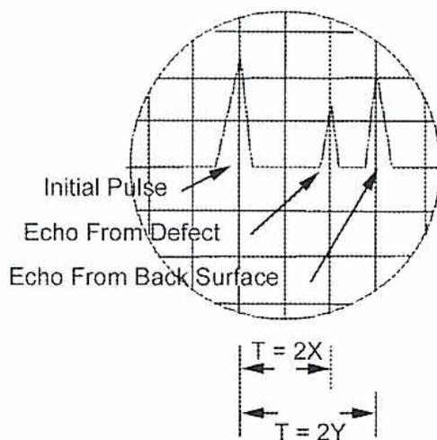
Figure 15
Ultrasonic Pulses
Transducers
Transducers may be purchased in various shapes and sizes to suit an application. Cylindrical crystal wafers are most commonly used. Small diameter, high frequency transducers are used to locate small discontinuities. Large transducers are capable of generating more energy, permitting the inspection of thicker specimens.
To detect defects quickly in a specimen with a large surface area, a paintbrush transducer up to 150 mm wide is used. If a defect is identified, a smaller transducer is used to find the specific location and size.
The transducer may have one or two crystals. In a single crystal design, the crystal acts as both the sending and receiving unit. Units with two crystals in the same probe allow one to act as the sender and the other as the receiving unit.
Transducer Orientation
The orientation of the transducer determines the angle at which the pulse strikes the specimen. For longitudinal wave testing, the transducer is located flat on the specimen. To create a shear wave, the pulse must enter the specimen at the desired angle. To accomplish this, the transducer is mounted on a plastic wedge which is part of the probe.
Generation of Pulse Waves
When a transducer is placed on the surface of a specimen and the pulse wave travels directly into the specimen, a longitudinal or compression wave is produced. It travels into the specimen at \( 90^\circ \) to the surface and, if the far surface is parallel, returns directly to the transducer as shown in Fig. 16(a) below. This system is used for measuring the thickness of materials and is capable of locating discontinuities directly under the transducer.
If the transducer is placed on a wedge-shaped plastic shoe, the pulse wave strikes the surface of the specimen at an angle. Just as light is refracted into the colours of the rainbow when it passes through a prism, refraction occurs when the ultrasonic pulse enters the specimen from the plastic shoe. The longitudinal (compression) and shear (transverse) waves are refracted at different angles and begin to separate as shown in Fig. 16(b).
As the angle of the wedge is increased, the separation of the two waves increase until, at some point, the longitudinal wave travels parallel to the surface as in Fig. 16(c). This is known as the critical angle. As long as the angle of the wedge is larger than the critical angle, only shear waves are being used to locate discontinuities.
If the angle of the wedge is increased to the point where the shear wave is refracted to the surface of the specimen, a surface wave is produced. This wave travels along the surface of the specimen until it strikes a discontinuity and an echo is generated. The surface wave only locates defects within a few millimeters of the surface.
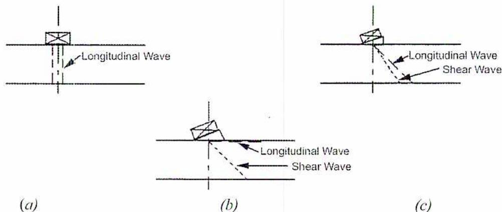
Figure 16 illustrates the operation of an ultrasonic transducer on a specimen. (a) shows a transducer on a specimen, with a longitudinal wave being generated. (b) shows the transducer on a wedge-shaped plastic shoe, where the longitudinal wave and shear wave are refracted at different angles. (c) shows the longitudinal wave traveling parallel to the surface at the critical angle, while the shear wave continues to enter the specimen.
Figure 16
Transducer Operation
Frequency
The size of the discontinuities to be located determines the frequency selection. To locate small discontinuities, short wavelengths are used. The shorter the wavelength, the higher the frequency required. For a high frequency, a thinner (and more fragile) crystal is used.
Couplant
For efficient testing, the ultrasonic pulses must be able to travel freely between the transducer and the specimen. If air is located between the two, its low acoustic impedance (low ability to conduct sound) causes most of the energy to be reflected from the surface of the specimen with little or no energy entering to examine the specimen. To remove the air, a liquid or paste couplant with higher acoustic impedance is used. This allows a larger percentage of the energy to travel into the specimen.
One solution to the low impedance is to immerse the specimen in a water tank. The water bath acts as the couplant. Adding wetting agents and removing any air trapped in the water increases efficiency. It is not practical to immerse larger specimens such as pressure vessels in water baths. In these cases, the specimen surface is covered with oil or grease that serves to bond the transducer to the specimen. The couplant used for these purposes is a substance that does not react with or contaminate the specimen, is easy to remove, and does not leak away during the test.
For relatively flat, smooth surfaces, a mixture of glycerin and water is used as a couplant. For rough surfaces, light motor oil with a wetting agent is used. As the surface temperature increases, heavier oils are used.
Signal-to-Noise Ratio
The detection of a defect involves many factors other than the relationship of wavelength and flaw size. For example, the amount of sound that reflects from a defect is dependent on the acoustic impedance mismatch between the flaw and the surrounding material. A void is generally a better reflector than a metallic inclusion because the impedance mismatch is greater between air and metal than between metal and another metal.
Often, the surrounding material has competing reflections. A good measure of detectability of a flaw is its signal-to-noise ratio (S/N). The signal-to-noise ratio is a measure of how the signal from the defect compares to other background reflections (categorized as "noise"). A signal-to-noise ratio of 3 to 1 is often required as a minimum. The absolute noise level and the absolute strength of an echo from a "small" defect depend on a number of factors such as:
- • The probe size and focal properties
- • The probe frequency, bandwidth and efficiency
- • The inspection path and distance (water and/or solid)
- • The interface (surface curvature and roughness)
- • The flaw location with respect to the incident beam
- • The inherent noisiness of the metal microstructure
- • The inherent reflectivity of the flaw which is dependent on its acoustic impedance, size, shape, and orientation
Cracks and volumetric defects can reflect ultrasonic waves quite differently. Many cracks are "invisible" from one direction and strong reflectors from another. Multifaceted flaws tend to scatter sound away from the transducer.
Advantages and Limitations
Advantages of ultrasonic inspection include:
- • It is sensitive to both surface and subsurface discontinuities
- • The depth of penetration for flaw detection or measurement is superior to other NDE methods
- • Only single-sided access is needed when the pulse-echo technique is used
- • Its high accuracy in determining reflector position and estimating size and shape
- • Minimal part preparation required
- • Electronic equipment provides instantaneous results
- • Detailed images can be produced with automated systems
- • It has other uses such as thickness measurements in addition to flaw detection
As with all NDE methods, ultrasonic inspection also has its limitations, which include:
- • Surface must be accessible to transmit ultrasound
- • Skill and training required is more extensive than with some other methods
- • It requires a coupling medium to promote transfer of sound energy into test specimen
- • Materials that are rough, irregular in shape, very small, exceptionally thin or not homogeneous are difficult to inspect
- • Cast iron and other coarse grained materials are difficult to inspect due to low sound transmission and high signal noise
- • Linear defects oriented parallel to the sound beam may go undetected
- • Reference standards are required for equipment calibration and characterization of flaws
ASME Section V
Article 4 was written to accommodate ultrasonic examination requirements for ASME Section XI - Rules for In-service Inspection of Nuclear Power Plant Components. This article can also be used by other Code Sections.
Article 5 is used to select and develop ultrasonic procedures for thickness determination, welds, materials, parts and components. Article 5 contains all of the basic technical and methodological requirements. The Code of Construction is referenced for the following:
- 1. Extent of examination and/or volume to be scanned
- 2. Personnel qualification
- 3. Certification requirements
- 4. Examination system characteristics
- 5. Acceptance criteria
- 6. Necessary records and documentation
- 7. Report requirements
- 8. Procedure requirements
Written Procedure Requirements
Ultrasonic examinations are performed according to a written procedure. The procedure includes the following:
- 1. Ultrasonic instrument type(s)
- 2. Description of calibration including blocks and techniques
- 3. Technique (straight and angled beam, contact, and or immersion)
- 4. Search unit type with frequency and transducer size
- 5. Special search units (wedges, shoes or saddles)
- 6. Angles and mode(s) of wave propagation in the material
- 7. Directions and extent of scanning
- 8. Couplant type and brand name
- 9. Weld and/or material types
- 10. Configurations to be examined (thickness dimensions) and form (casting, forging, plate)
- 11. The surface(s) from which the examination is completed
- 12. Condition of the surface
- 13. Data to be recorded
- 14. Alarms
- 15. Rotating, revolving or scanning mechanisms
- 16. Post examination cleaning
Materials
Article 5 applies to the following material product forms:
- 1. Plate
- 2. Forgings
- 3. Bars
- 4. Tubular goods
- 5. Castings
- 6. Bolting (studs and nuts)
- 7. Welds
- 8. Cladding
Each form of material has a section devoted to it describing the equipment, calibration, and examination to be used. Article 23 covers the requirements for examinations. It contains standards for ultrasonic examination such as SA-435 "Standard Specification for Straight-Beam Ultrasonic Examination of Steel Plate".
Reports
For each ultrasonic examination a report is required. The documentation is as per the code of construction. Typical information required on reports is as follows:
- 1. Procedure
- 2. Ultrasonic equipment used
- 3. Level of certification and identity of personnel completing the examination
- 4. Location of weld or area scanned
- 5. Surface from which the examination was conducted
- 6. Record of indications detected
- 7. Date and time
- 8. Surface condition
- 9. Calibration block identification
- 10. Couplant used
- 11. Frequency used
- 12. Special equipment
- 13. Calibration sheet identity
Records of calibration are also important. The calibration block identification is also included with equipment calibration reports (see T-530 to T-534).
Objective 8
Explain radiography, the procedures used and how to interpret the results.
RADIOGRAPHIC TESTING
Radiographic testing (RT) is an NDE technique used for detecting flaws that are internal or on the inside surface. It is one of the oldest NDE techniques used in the pressure equipment industry.
The use of industrial radiographic testing is legislated provincially through the Boiler and Pressure Vessel Act or the equivalent Act that specifies “Codes of Construction” for pressure vessels and pipelines.
Electronics and computers allow technicians to capture images digitally. Filmless radiography captures an image, digitally enhances it, and sends the image anywhere in the world. Digital images do not deteriorate with time. Technological advances have provided industry with small, light, and portable equipment that produces high quality x-rays. Linear accelerators generate extremely short wavelength, highly penetrating radiation. The technology has evolved to allow radiography to be widely used in numerous areas of inspection.
The principle behind RT techniques is that in the presence of flaws there is a differential absorption of penetrating radiation. Variations in density, composition and thickness result in the component being radiographed while absorbing different amounts of penetrating radiation. The unabsorbed radiation passes through the test component and exposes a film. The exposed film indicates the varying amounts of radiation passing through the component and gives a permanent record of the test.
Penetrating radiation can be x-rays or gamma rays. These sources of radiation differ primarily in the manner in which they are produced. X-rays are produced by high-speed electrons striking a metal target, causing a transfer of energy. An x-ray tube in an x-ray machine produces the high-speed electrons. Gamma rays are emitted from radioisotopes (radioactive materials), such as Cobalt 60 and Iridium 192, as they decay (disintegrate). The maximum penetration in steel for the various sources is shown in Table 5.
Table 5
Gamma Ray Penetration for Steel
| Source | Max. Thickness (mm) |
|---|---|
| X-ray | 76.2 |
| Cobalt-60 | 177.8 - 203.2 |
| Iridium - 192 | 76.2 |
Radiography can be used on all materials. RT is best suited for detecting three-dimensional internal flaws. RT is useful for determining if something is inside a pressure component (an object stuck in a pipe or elbow or liquid trapped between double-walled expansion joints). Material thickness measurements can also help to determine corrosion rates. Another application in the pressure equipment industry is the NDE testing of welds.
Discontinuities that can be detected are:
- • Voids
- • Porosity
- • Incomplete penetration
- • Cupping
- • Incomplete fusion
- • Internal Bursts
- • Thickness variations
- • Corrosion, thinning and pitting
- • Shrinkage cracks
- • Slag inclusions
Radiography can only detect cracking when cracking is oriented parallel to the radiation beam.
When completing an RT there are four essential steps:
- • Source selection
- • Set-up
- • Exposure of test component to the radiation source.
- • Film development
It is interesting that approximately sixty percent of the time is spent on set-up. Of all the NDE techniques, RT requires constant attention to safety. Large doses of x-rays or gamma rays kill human cells and massive doses can cause severe disability or death. Safety is not only a concern for the operator(s) of the RT equipment but for any individual in areas where RT is used. The power engineer/inspector reviews the NDE Company's safety program and reviews dosages RT workers have received.
Workers wear a device called a dosimeter (Fig. 17) to measure their exposure to radiation. A dosimeter is a pen shaped device that measures the cumulative dose of radiation it receives. Referring to Fig. 17, the dosimeter is a precision instrument consisting of an ionization chamber (1) which is sensitive to a desired radiation. It also consists of a quartz fibre electrometer (2) to measure the charge and a microscope (3) to read the
shadow of the fibre on a reticle (4). A reticle consists of a network of dots, wires, crosshairs or fine lines in the focal plane of an optical instruments eyepiece. The electrometer contains two electrodes, one of which is a movable quartz fibre. When the electrometer is charged to a predetermined voltage, the electrodes assume a calibrated separation.
When the dosimeter is exposed to a radiation source, ionization occurs in the surrounding chamber which decreases the charge on the electrodes in proportion to the exposure. The deflection of the movable quartz fibre is then projected, by a light source, through an objective lens (5) to the calibrated reticle and read through a microscope eyepiece (6).
Illumination for the optical system is obtained by pointing the dosimeter at any convenient light source. Light passes through the clear glass bottom seal (7) to illuminate the reticule. The button is sealed by a bellows (8) which contains an insulated charging pin (9).
When charging, the charging pin moves up to contact the electrometer, thereby closing the circuit. Sufficient voltage is applied to recharge the system. The entire dosimeter is hermetically sealed in a protective barrel (10). The dosimeter is usually clipped to worker's clothing to measure the actual exposure to radiation. For personal use, this is the most useful device to measure radiation because biological damage from radiation is cumulative.
![A detailed cross-sectional diagram of a dosimeter. The diagram shows a vertical assembly of components. At the top is the '6. Microscope Eyepiece', which is part of the '3. Microscope'. Below the microscope is the '4. Reticle'. Further down is the '5. Objective Lens'. The central part of the assembly is the '1. Ionization Chamber', which contains the '2. Quartz Fiber Electrometer'. The entire assembly is housed within a '10. Protective Barrel'. At the bottom of the barrel, there is a '7. Glass Seal' and '8. Bellows', which protect the '9. Insulated Charging Pin' located at the very bottom of the chamber.](d4c143a69ccd7e28fe8d01dbc9dfbcfa_img.jpg)
Figure 17
Dosimeter
When selecting an RT technique, the following points are considered:
- • The size and geometry of the component being tested
- • Typical defect type, size location and orientation
- • Shop or field testing
- • Personnel safety
- • Generally flaws must be at least as large as 2% of the penetration thickness to be detected
- • Access to both sides of the component is required to place the film
In addition to producing high quality radiographs, the radiographer is also skilled in radiographic interpretation. Interpretation of radiographs takes place in three basic steps which are:
- 1. Detection
- 2. Interpretation
- 3. Evaluation
All of these steps make use of the radiographer's visual acuity. Visual acuity is the ability to detect a spatial pattern in an image. The lighting condition in the place of viewing, and the experience level for recognizing various features in the image affects an individual's ability to detect discontinuities.
Discontinuities
Discontinuities are interruptions in the typical structure of a material. These interruptions may occur in the base metal, weld material or heat affected zones. Discontinuities, which do not meet the requirements of the codes or specifications used to invoke and control an inspection, are referred to as defects. The following discontinuities are typical of all types of welding.
Cold lap is a condition where the weld filler metal does not properly fuse with the base metal or the previous weld pass material (interpass cold lap). The arc does not melt the base metal sufficiently and causes the slightly molten puddle to flow into base material without bonding. This is illustrated in Fig. 18.
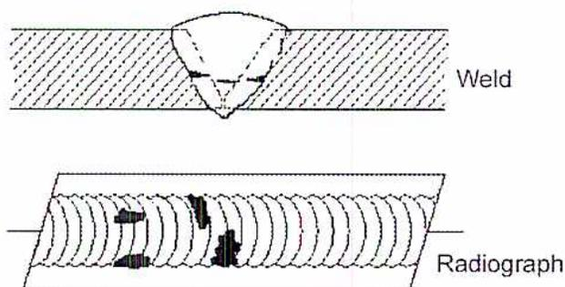
The image consists of two parts. The top part is a schematic cross-section of a weld bead. It shows a weld bead on a base metal. At the toe of the weld, there is a lack of fusion, indicated by a dashed line and a small gap. The word 'Weld' is written to the right. The bottom part is a radiograph of a weld bead. It shows a weld bead with several dark, irregular areas, which are lack of fusion defects. The word 'Radiograph' is written to the right.
Figure 18
Cold Lap
Porosity is the result of gas entrapment in the solidifying metal. Porosity can take many shapes on a radiograph but often appears as dark round or irregular spots or specks appearing singularly, in clusters or rows. Sometimes porosity is elongated and may appear to have a tail. This is the result of gas attempting to escape while the metal is still in a liquid state and is called wormhole porosity. All porosity is a void in the material having a radiographic density more than the surrounding area. Porosity is illustrated in Fig. 19.
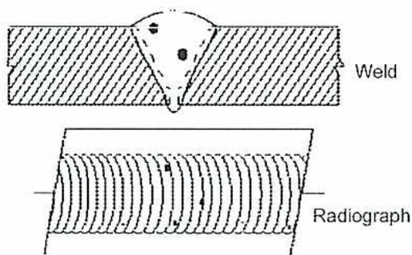
The diagram consists of two parts. The top part is a cross-sectional view of a weld bead, represented by a hatched area, showing several small, dark, circular voids representing porosity. The bottom part is a radiograph of the same weld, showing a series of wavy lines representing the weld bead, with several dark, irregular spots representing the porosity.
Figure 19
Porosity
Cluster porosity (Fig. 20) is caused when flux coated electrodes are contaminated with moisture. The moisture turns into gases when heated and becomes trapped in the weld during the welding process. Cluster porosity appears like regular porosity in the radiograph, but the indications are grouped close together.
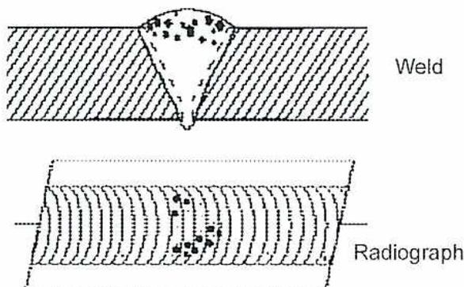
The diagram consists of two parts. The top part is a cross-sectional view of a weld bead, represented by a hatched area, showing a dense cluster of small, dark, circular voids representing cluster porosity. The bottom part is a radiograph of the same weld, showing a series of wavy lines representing the weld bead, with a dark, irregular cluster of spots representing the cluster porosity.
Figure 20
Cluster Porosity
Slag inclusions are non-metallic solid material entrapped in weld metal or between weld and base metal. An example is shown in Fig. 21. In a radiograph, dark, jagged asymmetrical shapes within the weld or along the weld joint areas are indicative of slag inclusions.
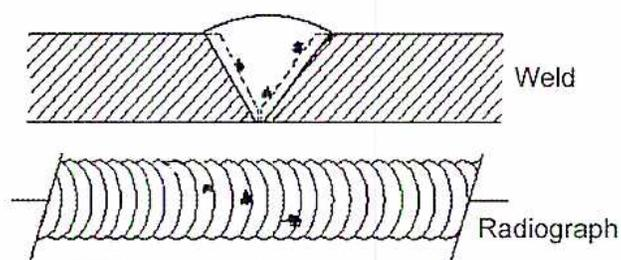
Figure 21
Slag Inclusions
Incomplete penetration (IP) or lack of penetration (LOP) occurs when the weld metal fails to penetrate the joint. It is one of the most serious weld discontinuities. Lack of penetration allows a natural stress riser from which a crack may propagate. The appearance on a radiograph is a dark area with well-defined, straight edges that follows the land or root face down the centre of the weldment. Incomplete penetration is shown in a weld and on a radiograph in Fig. 22.
![Figure 22: Diagram illustrating Incomplete Penetration. The top part shows a cross-section of a weld joint with a V-groove. The weld metal is represented by diagonal hatching. A label 'Inadequate or Lack of Penetration' with an arrow points to the root area where the weld metal has not fully penetrated the joint. The bottom part shows a radiograph of the same weld joint, where the incomplete penetration appears as a dark, well-defined, straight-edged area along the centerline. Labels 'Weld', 'Inadequate or Lack of Penetration', and 'Radiograph' are present.](0eb742ed939b1846d05da644664fa9b7_img.jpg)
Figure 22
Incomplete Penetration
Incomplete fusion is a condition where the weld filler metal does not properly fuse with the base metal. Appearance on a radiograph is shown in Fig. 23. It appears as a dark line or lines oriented in the direction of the weld seam along the weld preparation or joining area.
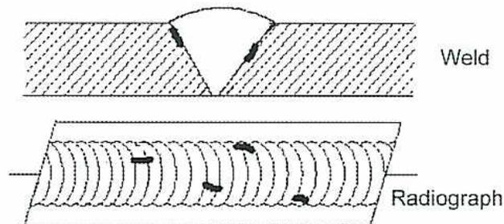
The diagram consists of two parts. The top part is a cross-sectional view of a weld joint, showing a V-groove between two base metal pieces. The bottom part is a radiograph of the same joint, showing a series of overlapping weld ripples. Dark, irregular lines are visible within the weld area, particularly along the edges, indicating incomplete fusion.
Figure 23
Incomplete Fusion
Internal concavity or suck back is condition where the weld metal has contracted as it cools and has been drawn up into the root of the weld. On a radiograph it looks similar to lack of penetration (Fig. 24), but the line has irregular edges and it is often quite wide in the centre of the weld image.
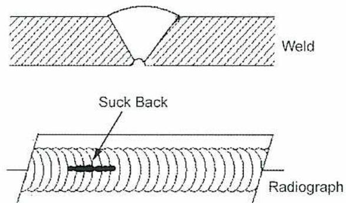
The diagram consists of two parts. The top part is a cross-sectional view of a weld joint, showing a V-groove between two base metal pieces. The bottom part is a radiograph of the same joint, showing a series of overlapping weld ripples. A dark, irregular line is visible at the root of the weld, labeled 'Suck Back'.
Figure 24
Suck Back
Internal or root undercut is an erosion of the base metal next to the root of the weld. In the radiographic image it appears as a dark irregular line offset from the centreline of the weld as shown in Fig. 25. Undercutting is not as straight edged as LOP because it does not follow a ground edge.
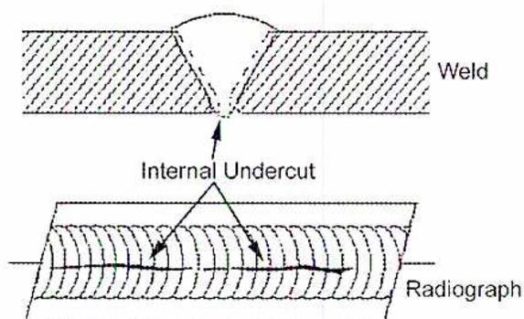
The diagram consists of two parts. The top part is a cross-sectional view of a weld joint, showing a V-shaped weld bead between two base metal pieces. The bottom part is a radiograph of the same joint, showing a series of overlapping weld ripples. A dark, irregular line is visible within the weld area, offset from the centerline. Arrows from the label 'Internal Undercut' point to this dark line. The labels 'Weld' and 'Radiograph' are placed to the right of their respective parts.
Figure 25
Root Undercut
External or crown undercut is an erosion of the base metal next to the crown of the weld. In the radiograph, it appears as a dark irregular line along the outside edge of the weld area (see Fig. 26).
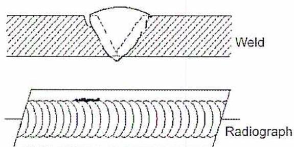
The diagram consists of two parts. The top part is a cross-sectional view of a weld joint, showing a V-shaped weld bead. The bottom part is a radiograph of the same joint, showing a series of overlapping weld ripples. A dark, irregular line is visible along the top edge of the weld area. Arrows from the label 'External Undercut' point to this line. The labels 'Weld' and 'Radiograph' are placed to the right of their respective parts.
Figure 26
External Undercut
Offset or mismatch is a condition where two pieces being welded together are not properly aligned. On the radiographic image (Fig. 27) there is a noticeable difference in density between the two pieces. The difference in material thickness causes the difference in density. Failure of the weld metal to fuse with the base metal causes the dark, straight line.
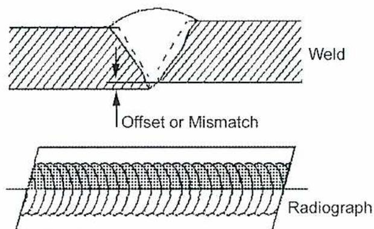
The diagram consists of two parts. The top part is a cross-sectional view of a weld joint. Two base metal pieces, represented by diagonal hatching, are shown. A weld bead, represented by a stippled pattern, is positioned between them. An arrow labeled "Offset or Mismatch" points to a dark, straight vertical line at the interface between the weld and the base metal, indicating a lack of fusion. The top part is labeled "Weld" on the right. The bottom part is a radiographic image of the same joint. It shows a series of wavy, overlapping lines representing the weld bead. A distinct dark, straight vertical line is visible, corresponding to the offset or mismatch indicated in the cross-section. This part is labeled "Radiograph" on the right.
Figure 27
Mismatch
Inadequate weld reinforcement is an area of a weld where the thickness of weld metal deposited is less than the thickness of the base material. It is easy to determine by radiograph if the weld has inadequate reinforcement. The image density in the area of suspected inadequacy is darker than the image density of the surrounding base material as in Fig. 28.
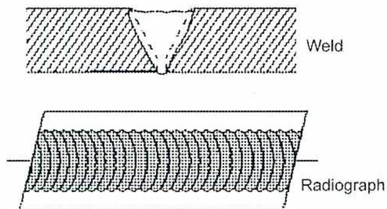
The diagram consists of two parts. The top part is a cross-sectional view of a weld joint. Two base metal pieces, represented by diagonal hatching, are shown. A weld bead, represented by a stippled pattern, is positioned between them. The weld bead is noticeably thinner than the base metal pieces. This part is labeled "Weld" on the right. The bottom part is a radiographic image of the same joint. It shows a series of wavy, overlapping lines representing the weld bead. The weld bead appears darker and less dense than the surrounding base metal, which is characteristic of inadequate reinforcement. This part is labeled "Radiograph" on the right.
Figure 28
Inadequate Weld Reinforcement
Excess weld reinforcement is an area of a weld, which has weld metal added in excess of that engineering drawings and codes specify. The appearance on a radiograph is a localized, lighter area in the weld. A visual inspection determines if the weld reinforcement is in excess of that the individual code used for the inspection specifies. An example is shown in Fig. 29.
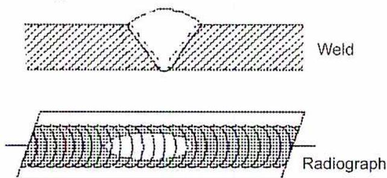
The diagram consists of two parts. The top part is a cross-sectional view of a weld bead between two base metals. The weld bead has a convex reinforcement on its top surface. The bottom part is a radiograph of the same weld, showing the internal structure. The reinforcement area appears as a lighter, more opaque region at the top of the weld bead.
Figure 29
Excessive Weld Reinforcement
Cracking can be detected in a radiograph only if the crack is propagating in a direction that produces a change in thickness parallel to the x-ray beam. Cracks appear as jagged and often very faint irregular lines. Cracks can sometimes appear as “tails” on inclusions or porosity, as shown in Fig. 30.
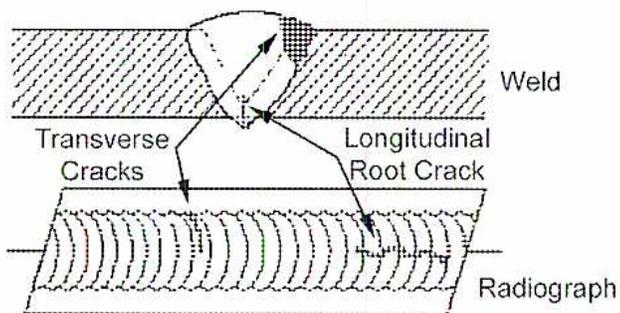
The diagram consists of two parts. The top part is a cross-sectional view of a weld bead. It shows a transverse crack near the top surface and a longitudinal root crack near the bottom surface. The bottom part is a radiograph of the same weld, showing the internal structure. The cracks appear as faint, irregular lines.
Figure 30
Cracking
Discontinuities in Tungsten Inert Gas (TIG) Welds
The following discontinuities are peculiar to the TIG welding process. These discontinuities occur in most metals welded using TIG, including aluminium and stainless steels. The TIG method of welding produces a clean homogeneous weld which, when radiographed, is easily interpreted.
Tungsten Inclusions
Tungsten is a brittle and inherently dense material used in the electrode in tungsten inert gas welding. If improper welding procedures are used, tungsten may be entrapped in the weld. Radiographically, tungsten is denser than aluminium or steel. It shows as a lighter area with a distinct outline on the radiograph. See Fig. 31.
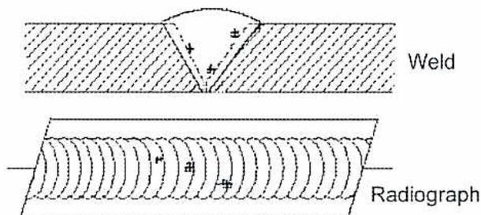
The diagram consists of two parts. The top part, labeled 'Weld', shows a cross-section of a weld bead with a V-groove. Inside the weld, there are three small, dark, triangular shapes representing tungsten inclusions. The bottom part, labeled 'Radiograph', shows the same weld bead as it would appear on a radiograph. The tungsten inclusions appear as three distinct, lighter-colored triangular shapes against the darker background of the weld.
Figure 31
Tungsten Inclusions
Oxide Inclusions
Oxide inclusions are usually visible on the surface of material being welded (especially aluminium). Oxide inclusions are less dense than the surrounding materials and appear as dark irregularly shaped discontinuities in the radiograph (Fig. 32).
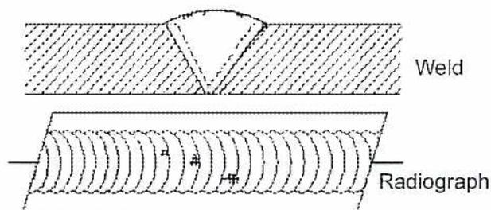
The diagram consists of two parts. The top part, labeled 'Weld', shows a cross-section of a weld bead with a V-groove. Inside the weld, there are three small, dark, irregular shapes representing oxide inclusions. The bottom part, labeled 'Radiograph', shows the same weld bead as it would appear on a radiograph. The oxide inclusions appear as three distinct, darker-colored irregular shapes against the lighter background of the weld.
Figure 32
Oxide Inclusions
Objective 9
Explain acoustic emission testing and the procedures used.
ACOUSTIC EMISSION TESTING
Most materials and structures emit energy in the form of mechanical vibrations (acoustic emission) as a result of sudden change or movement. This is usually due to a defect-related phenomenon such as cracking or plastic deformation. These acoustic emissions propagate from the source throughout the structure. The technique of electronically “listening” to these acoustic emissions detects and locates defects as they occur, across the entire monitored area, providing early warning of pending failure in a timely and cost-effective manner. An example is volcano and earthquake seismic [acoustic] monitoring.
All types of structures and production processes undergo continuous loading and stressing. On pipelines and vessels, the process itself, both temperature and pressure, supply the stress. In production processes, machines apply stresses to materials as they are being formed, shaped and joined (e.g. in welding). These stresses eventually cause defect growth (e.g. cracking) in weaker or fatigued areas of the structure. Acoustic emission (AE) is unique to all other non-destructive test (NDT) methods because it detects the defect growth, in real time, as it is occurring. It is important to have such a non-destructive test method that can detect and locate flaws as early as possible. As a result, the structure can be repaired or replaced long before a catastrophe occurs, thereby preventing loss of life, environmental damage, and costly repairs.
ASME Section V Articles 11, 12 and 13 address acoustic emission examination methodology. To date, no Code Section has adopted any of these articles. A few Code Case requests have been allowed for very specific applications.
ACOUSTIC EMISSION PROCEDURES
Acoustic emission (AE) is the class of phenomena whereby transient elastic waves are generated by the rapid release of energy from localized sources within a material. Although this definition sounds rather complex, it can easily be explained with the aid of Fig. 33, showing a material cracking under stress.
Figure 33
Acoustic Emission Testing
The material cracking emits acoustic waves that emanate in an omnidirectional manner from the source. An acoustic emission sensor (usually piezoelectric based) is in contact with the material being monitored. It detects the mechanical shock wave and converts the very low displacement, high frequency mechanical wave, into an electronic signal that is amplified by a preamplifier and processed by the AE instrument. Stress plays an important role in the AE generation process. In many AE applications, the process automatically applies stress (e.g. pipelines), and in others, an externally induced force applies the stress. The key is that the stresses being applied are non-destructive and well below the expected defect tolerance of the material.
AE systems operate in a range of 1 kHz to 2 MHz or greater in frequency. Background noises such as friction, outside impacts, or process generated signals, that tend to mask acoustic emission impose the lower frequency limit. Attenuation, which tends to limit the range of detection of acoustic emission signals, imposes the upper frequency limit. A critical part of the AE application process is the selection of a suitable frequency range for AE detection and signal processing. It must be above the non-AE related background noises, and provide the necessary detection range (distance/frequency) and sensitivity to AE related signals. This is accomplished through the selection of AE sensors (that operate in various narrow-band or wide-band frequency ranges) and electronic signal filtering.
Acoustic emission is generally transient in nature, occurring in discrete bursts. Analyzing various aspects of the waveforms associated with each hit one at a time, AE systems process these bursts as AE “hits.”
Fig. 34 shows an AE hit waveform and a few of the AE features that are processed by the AE system. “Time of hit,” “rise time,” “AE amplitude,” “AE counts,” “duration,” “frequency content,” and even the waveform itself are AE features that can be analyzed to help identify the source of AE as noise or defect-related.
![Figure 34: Acoustic Emission Waveform. The graph shows a signal oscillating above and below a horizontal 'Threshold' line. The vertical axis is labeled 'Amplitude' and the horizontal axis is labeled 'Counts'. A 'Rise Time' is indicated by a horizontal double-headed arrow from the threshold to the peak of a wave. A 'Hit Duration' is indicated by a horizontal double-headed arrow from the start of a wave to its end. A 'Time of Hit' is indicated by a vertical dashed line at the start of a wave. Below the horizontal axis, there are five small rectangular boxes representing individual hits, with the label 'Counts' to the right.](4086a572c080354982c11f1de4d6921d_img.jpg)
Figure 34
Acoustic Emission Waveform
Acoustic Emission Systems
AE systems come in many varieties. They range from simple single-channel, single purpose devices to complex multi-channel, multi-processing systems.
The basic AE system consists of one or more AE sensors and a preamplifier (per channel) that is connected to an AE processor. The processor receives signals from the AE sensors/preamplifiers as well as signals from external sensors or control inputs, which might be following the process or the stress (or load) being applied to the materials under test.
The job of the AE processor is to process these inputs together to form outputs indicative of the activity detected and correlated to the process or stress measured. These outputs can be a pass/fail signal for control purposes an indicator or set of graphical outputs. Outputs can illustrate trending, or the relationship of AE to the load or stress on the structure. The display might show plots of AE “locations” on a structure with a cluster analysis to help the operator determine areas of concern.
Location of Sensors
The sensor may be located some distance from the source (subject to attenuation) and still detect the signal. If multiple sensors are placed on the same structure, analyzing the time difference of arrivals to each sensor and processing triangulation calculations makes it possible to determine the location of the source.
To determine location in one dimension (a line), two sensor arrivals are required. To determine location in two dimensions (over a surface or plane) three sensor arrivals are required. To determine location in three dimensions, a minimum of four sensor arrivals are required. Monitoring multiple AE events in the same area and applying a cluster analysis analyses the severity of a source.
Source location is an extremely powerful tool in AE analysis and can be used to monitor a relatively large structure with a minimum number of sensors. This is a tremendous advantage in the case of vessels, especially when they are insulated, because very few
access holes are needed for placement of AE sensors to determine structural integrity of the vessel. All other NDT techniques require all the insulation to be removed for full inspection, making them much more expensive than AE examination techniques.
ACOUSTIC EMISSIONS APPLICATIONS
Crack Detection
One of the oldest and most successful applications of acoustic emission has been in manufacturing with the detection of cracking in various materials during bonding, forming or pressing operations. AE systems are interfaced to programmable controllers and are set to monitor for cracking only during the high-stress point of the process. When a crack occurs, the AE system provides a failure output for part rejection. Many AE crack detection systems provide continual monitoring and real time inspection.
Vessel Inspection
One of the most successful applications of AE is in vessel inspection for the petrochemical industry. Sensors are placed on the vessels in arrays to monitor the entire pressure boundary. The vessel is then subjected to pressures typically 10 percent above previous operating levels (well below the vessel pressure rating) with the test pressures being applied in a "pressure rise-hold-rise-hold" fashion, while monitoring the AE activity during each of these pressurization segments. AE examination of vessels is a sensitive and cost-effective method for vessel inspection.
Leak Detection
In leak detection, the instrumentation detects the AE signal that is generated from the turbulent or cavitational flow through a crack, valve, seal or orifice. Acoustic energy is transmitted through the fluid, through air or the structure to a piezoelectric sensor. The signal is then processed, filtered and compared to a leak profile located using triangulation techniques. Existing installations include monitoring of pipelines in utility and petrochemical plants as well as leak detection in boilers, vessels, and through valves.
These systems offer the capability to connect and monitor multiple sensors throughout a plant. The systems can be operated in a stand-alone mode, interfaced to programmable controllers, or tied into plant-wide distributed control systems. They also offer the ability to plot plant piping and vessel drawings on cathode ray tube (CRT) monitors that can pinpoint leak locations.
Pulp and Paper Industry
AE applications within the paper industry have exposed cracks in rotating pressure vessels such as steam-heated rollers and paper machine dryers, and in rotating equipment such as felt rolls, reel spools, calendar rolls, and suction rolls. AE has uncovered the delamination of bonded materials, including thermal spray metal coatings and rubber roll covers.
Objective 10
Explain the methods of leak testing.
LEAK TESTING
Leak testing is used to verify the integrity of a completed pressure vessel or fitting before it is placed into service or to determine if a vessel currently in service may continue to be used. Leak testing identifies discontinuities in the vessel perimeter. For example, it shows cracks and pinholes in welds, but does not show porosity within a weld or small cracks that do not penetrate the vessel wall.
PRESSURE TESTING
Regulations require that pressure vessels and pressure piping built to the American Society of Mechanical Engineers (ASME) Code be pressure tested when they are completed. The test pressure generally ranges from 1.25 to 1.5 times the maximum allowable working pressure (MAWP). This test serves two purposes, namely that it verifies that:
- • The vessel can withstand the pressure for which it was designed
- • No leaks are present
Pressure testing is also used on piping and vessels that have been in service, particularly when they are subject to corrosion or cracking. The test verifies that the vessel or piping can still safely withstand the operating pressure with a proven margin of safety and that no through cracks (that is, cracks that penetrate the vessel wall) or holes have developed. Pressure testing is especially useful if, due to the design of the equipment, the inspector does not have adequate access to conduct a visual inspection.
Many jurisdiction inspectors, as well as owners, require the organization performing the pressure test to provide written test procedures. Reviewing and approving these procedures prior to the test averts potential problems.
The first step in leak testing is to determine whether, in fact, leaks are present. The following types of pressure tests are used to aid in the detection of a leak:
- • Hydrostatic
- • Pneumatic
Hydrostatic Testing
Hydrostatic tests are generally carried out by filling the vessel with water and pressurizing the fluid to the required pressure. The vessel is then examined for leaks.
Preparation
In a new vessel, all connections such as flanges and couplings are closed off with blind flanges and plugs. A drain valve is located at the low point of the vessel to allow removal of the water after the test. The filling connection must have an isolating valve, and a vent valve is required at the top to allow all air to be expelled.
For testing of in-service vessels, more preparation is required. If the fluid the vessel normally handles is toxic or flammable, the vessel is cleaned and purged. The vessel is isolated from the rest of the system. Existing valves are used if they are in good condition. Otherwise, piping connections at the vessel are opened and blind flanges installed. Control line connections to the vessel are removed and closed off. The procedures listed for the preparation of new vessels are also carried out.
If a vessel is filled with water during standard operation, the hydrostatic test should not pose a problem. However, large vessels that normally contain a gas may not be designed to hold water. In such cases, additional supports may be required for the vessel, and the foundation is inspected to ensure that it can carry the additional weight. Vessels have been known to sink through concrete floors because of the load the water puts on them.
The test pressure is usually monitored on a pressure gauge. Many jurisdictions insist that these gauges be calibrated regularly to ensure an accurate reading. As an additional precaution, two gauges are used. There are cases on record where vessels have been permanently deformed because a defective pressure gauge indicated a pressure lower than that applied.
Fluid Selection
The most common fluid for hydrostatic testing is water. It is inexpensive and readily available. However, if the test is to be performed when ambient conditions are near or below freezing, use of a glycol/water mixture or methanol should be considered. These are more expensive than water, and disposal poses environmental problems, but their use avoids the possibility of frozen drain lines when the test is completed.
In some cases, it is not desirable to have water in the equipment because of its effect on the process fluid. With the approval of the owner and jurisdiction inspector, another more compatible fluid may be used.
Temperatures and Pressures
For new vessels, the code of construction dictates the test pressure. For example, the ASME Boiler and Pressure Vessel Code, Section VIII, Division 1 requires a hydrostatic test of 1.5 times the maximum allowable working pressure. For used equipment, the owner or jurisdiction inspector may determine the test pressure, but it should not exceed the test pressure used for testing when the vessel was new. If the inspector is only concerned with leaks that may have developed in service, a hydrostatic test at the operating pressure is acceptable.
The temperature of the test fluid is also important, especially if the material of construction is subject to brittle failure. It is recommended that water for pressure testing boilers be above 27°C. For pressure vessels, water temperature should be at least 17°C above the minimum design metal temperature. If in doubt, check the code of construction for the required test temperature.
If the test fluid is below room temperature, condensation can form on the outer surface of the vessel, hiding small leaks and thus defeating the purpose of the test.
Testing
Once the vessel has been filled with liquid and all the air vented, a pump may be used to increase the pressure within the vessel to the required value. For low pressure tests, this is generally carried out in one step. For higher pressure tests, the pressure is increased in increments with a visual inspection conducted at the end of each step.
For pressures below 3000 kPa, the vessel may be inspected at the test pressure. Once test pressures exceed this value, water jets issuing through a pinhole or crack become a danger to the inspector. In these cases, the vessel is pressurized to the test pressure and held there for a specified time. The pressure is then reduced to the operating pressure before the inspection is made.
The visual inspection involves examining the entire surface of the vessel, looking not only for wet areas that indicate a problem but also looking for small drops of moisture. A large defect causes a significant amount of liquid to escape from the vessel. However, a small crack may allow only a few drops to escape, even at the test pressure.
Another indication that defects are present is a drop in the test pressure during the hydrostatic test, as escaping liquid causes the pressure to drop. However, a constant pressure should not be taken as proof that there are no leaks. First, a small leak of a few drops may not produce a noticeable pressure drop. Second, an increase in the temperature of the test liquid can create sufficient expansion to compensate for any losses due to leakage. When testing is complete, the pressure is released slowly.
Safety Concerns
Liquids are used for testing because they do not expand significantly when the pressure drops. The theory is that if a failure should occur, only a small, harmless flow of water is released. In practice, because all the air cannot be vented from vessels, some gases are trapped and compressed. Therefore, in the event of a failure, there is still danger to personnel in the vicinity. Blind flanges whose bolts failed during a hydrostatic test have been known to travel up to 20 meters, and plugs have left couplings with enough force to kill a person. In one instance, the head of a propane storage tank failed, deluging the entire fabrication shop with 100 m 3 of water. For this reason, all non-essential personnel should leave the area when pressure tests are being conducted.
Advantages
Pressure testing, especially using water, is inexpensive, easy to conduct because minimal preparation is required, and does not require highly skilled operators. It identifies leaks through cracks and pinholes in the pressure envelope. By demonstrating that the vessel is capable of withstanding 1.5 times the operating pressure, a degree of confidence in the integrity of the vessel is assured.
Pneumatic Testing
Pneumatic testing involves the pressurization of a vessel or piping system with a compressible gas, such as air or nitrogen, to determine if any leaks are present. The air or nitrogen may be the only suitable test substance if water can damage the interior of the vessel, as in the case of refractory linings or catalyst beds. As this may be a hazardous test, it should only be used when other methods are not acceptable.
Preparation and Gas Selection
As with the hydrostatic test, the preparation for pneumatic testing involves isolating the vessel from the system and controls. Using a gas as a test medium does not place a significant amount of load in the vessel. For general applications, air is an inexpensive and readily available test medium. However, if a possibility of combustion exists, an inert gas such as nitrogen may be used.
Temperatures and Pressures
Because of the inherent danger in testing with compressed gases, some Codes allow the use of a lower test pressure than that used for hydrostatic tests. If the pneumatic test is used as an additional test to the hydrostatic test or as a leak test prior to the hydrostatic test, pressures below the operating pressure may be acceptable.
With this test, it is even more important that the proper test temperature be maintained. If there is any possibility of brittle failure of the test vessel, another method of testing is used. As the testing gas is usually delivered to the test site as a liquid or at a very high pressure, a pressure reducing system is used to produce the required test pressure. The pressure reduction causes a refrigerating effect which can cool the vessel or piping enough to affect the ductility of the metal. Heaters are used to maintain a minimum gas temperature.
If the supply pressure of the test fluid is higher than the test pressure, overpressure protection must be provided to prevent the test vessel from being overpressured during the test.
Testing
As with high pressure liquid testing, the pressure is increased in stages, with inspection occurring at each stage. The method of inspection to locate leaks can vary from the basic soap test to mass spectrometry. These techniques are discussed later.
Safety Concerns
The primary hazard in pneumatic testing is the amount of energy stored in the compressed fluid during the test. If a failure should occur, the results can be catastrophic. Pneumatic testing should be done with all non-essential personnel removed from the danger zone.
Advantages
Pneumatic testing is useful in determining whether leaks exist in a piping system prior to carrying out the hydrostatic test. At low pressures, the danger is reduced and a soap test can be done to locate leaks. The test does not create a mass loading on the item being tested and does not involve cleanup after the test because the gas may be vented to atmosphere. Pneumatic testing may be the only acceptable test method in cases where the interior of the vessel is lined with material that liquids can damage.
LOCATION OF LEAKS
Once it has been determined that leaks are present or suspected, other tests are used to pinpoint the exact location of the leaks. ASME Section V Article 10 “Leak Testing” has seven mandatory appendices to cover six specific types of tests, as follows:
- • Appendix I, Bubble Test (Direct Pressure Technique)
- • Appendix II, Bubble Test (Vacuum Box Technique)
- • Appendix III, Halogen Diode Detector Probe Test
- • Appendix IV, Helium Mass Spectrometer (Detector Probe Technique)
- • Appendix V, Helium Mass Spectrometer (Tracer Probe and Hood Technique)
- • Appendix VI, Pressure Change Test
Bubble Leak Testing
The bubble test, sometimes called the soap test, is a basic method of locating a leak. It is used when the pressurizing fluid is a gas and access is available to the surface where the leak is suspected. This test method is quick, inexpensive, and does not require operator training.
The early test method involved brushing or pouring a liquid soap solution over the pressurized vessel or piping system. Escaping gas would form bubbles in the soap solution, providing a clearly visible indication of where a leak was occurring. The number and size of bubbles indicates the size of the leak.
While this type of test is acceptable in most applications, the soap leaves a film when it dries. If hard water is used, the soap tends to curdle rather than bubble. In some cases, impurities in the water can contaminate the material being tested. For example, chlorides in the water can have an effect upon stainless steel.
Instead of soap, special solutions with enhanced surface tension, viscosity, and film retention properties are now commonly used. These solutions enable the inspector to locate smaller leaks than is possible when using soap and water. A more involved method of bubble testing, called the immersion method, involves placing the pressurized specimen
in a water bath. The escaping gas forms a trail of gas bubbles as it rises to the surface of the liquid.
Vacuum Testing
In vacuum testing, rather than pressurizing the interior of the vessel, a vacuum is used to create the pressure difference necessary for leakage detection. Because the best possible vacuum is 101 kPa below atmospheric pressure, the pressure differential is limited. However, the danger of an implosion is also reduced.
To perform the test, the specimen is placed in a vacuum chamber, or a vacuum chamber is attached to the side of the vessel. A pump is used to remove air from the chamber, causing the pressure to drop. Because a pressure difference exists between the interior of the vessel or sample and the vacuum chamber, leakage occurs through any cracks or other openings. Any of the methods described later in this module may then be used to locate the leaks.
Vacuum testing is commonly used for testing electrical equipment and in the laboratory. It is seldom used in the pressure vessel industry. It is sometimes used for testing the floor plates of vertical tanks.
Dye Tracer Leak Testing
In the standard hydrostatic test, observing formation of water droplets on the vessel surface detects leaks. When it is desirable to locate very small leaks, or visibility is a problem, a fluorescent dye is added to the water inside the vessel. The dye is similar to the fluorescent dye used in liquid penetrant inspection. The dye leaks through cracks or openings to the outside of the vessel. By examining the external surface of the vessel with an ultraviolet light, the dye is seen more readily than water.
Halogen Leak Testing
This testing method involves Freon or halogen gases and a halide torch to detect leaks. Although the method is sensitive to leaks, the use of halocarbon gases poses environmental problems and it will probably be discontinued in the future.
The halide torch burns compressed gas to heat a brass plate. A sample line consisting of a rubber hose is moved over areas of suspected leaks and draws a sample into the gas burner. Any presence of halide causes the formation of copper halide, creating a color change in the flame.
This method is commonly used for leak testing refrigeration systems. However, filling a pressure vessel with halide for the purposes of a test is very expensive compared to other available methods.
Helium Mass Spectrometer Leak Testing
Mass spectrometers are the most sensitive leak detectors available. They introduce a tracer gas such as helium into the test vessel and move the detector “sniffer” hose over the surface to locate leaks. Because helium atoms are smaller than most other atoms, they
penetrate through smaller cracks, providing a more sensitive test. The detector itself is able to detect one part of helium in 10 million parts of air. Helium is an inert gas that does not react with other gases or materials of construction. The amount of helium in the atmosphere is not significant and does not interfere with leak testing.
Objective 11
Explain the procedure for a proof test.
PROOF TEST OR HYDROSTATIC DEFORMATION TEST
For the most part, ASME Section I uses experience-based design method known as design-by-rule. Other sections of the ASME Code, namely Section III, Subsection NB, and Section VIII, Division 2, use a newer method, known as design-by-analysis. Design-by-rule is a process requiring the determination of loads, the choice of a design formula, and the selection of an appropriate design stress for the material to be used. Rules for this kind of design are found throughout Section I, with most being in Part PG (the general rules). Other design rules are found in those parts of Section I dealing with specific types of boilers or particular types of construction.
The principal design rules are found in Part PG, paragraphs PG-16 through PG-55. There are formulas for the design of cylindrical components under internal pressure (tube, pipe, headers, and drums), heads (dished, flat, stayed, and unstayed), stayed surfaces, and ligaments between holes. Rules are also provided for openings or penetrations in any of these components, based on a system of compensation in which the material removed for the opening is replaced as reinforcing in the region immediately around the opening, called the limits of compensation (see PG-36). All of these formulas involve internal pressure except for the rules for support and attachment lugs of PG-55, for which the designer chooses the design loads on the basis of the anticipated mass or other loads to be carried.
Another method of design permitted by Section I is a hydrostatic deformation or proof test (PG-18, Appendix A-22). This is another experience-based method used to establish a safe design pressure for components for which no rules are given or when strength cannot be calculated with a satisfactory assurance of accuracy. In this type of proof test, a full-size prototype of the pressure part is carefully subjected to a slowly increasing hydrostatic pressure until yielding or bursting occurs (depending on the test). The maximum allowable working pressure is then established by an appropriate formula that includes the strength of the material and a suitable safety factor. ASME Section I joined ASME Section VIII in allowing a burst test to be stopped before actual bursting occurs, when the test pressure justifies the desired design pressure. The particular component so tested may never be used for Code Construction because it might have been on the verge of failure.
The design factor, or so-called safety factor, used in the burst test formula for ductile materials has been 5 since the 1930s, when one of the factors used to establish allowable
design stress was one-fifth of the Ultimate Tensile Strength (UTS). That factor on UTS has been reduced over the years from 5 to 4 (circa 1950) and from 4 to 3.5 in the 1999 addenda. Thus the design factor used in the burst test was seen to be out of date and due for a reduction.
In the ASME 2001 Edition, both Section I and Section VIII approved a reduction in this factor to 4.0 for ductile materials only. The Subcommittee on Design is continuing to study whether any further reduction is warranted, and also whether a similar change might be appropriate for non-ductile cast materials.
Proof testing may not be used if Section I has design rules for the component and in practice, such testing is seldom employed. However, it can be a simple and effective way of establishing an acceptable design pressure for unusual designs, odd shapes, or special features that difficult and costly to analyse even with the latest computer-based methods. A common application of proof testing before the advent of sophisticated analytical methods was in the design of marine boiler headers with D-shaped or square cross section.
Tests that are used to establish the maximum allowable working pressure of pressure parts must be witnessed and approved by the Authorized Inspector, as required by ASME Section I Appendix A-22.10. The test report becomes a permanent reference to justify the design of such parts if the manufacturer wants to use that design again for other boilers.
Applications of Proof Testing
This information can be found in ASME Section IV Part HLW- Potable Water Heaters. A proof test may be applied to determine the MAWP on the water heater. Hydrostatic pressure is applied to a full-sized sample of a water heater. On the other hand, one sample vessel may be tested to establish the MAWP for a series of water heaters. Water heater vessels are in series under the following conditions:
- • The heads are of the same geometry and thickness
- • The cylindrical shell and tubes, differ only by length
- • The openings are the same size and type as those on the proof-tested vessel
Test Procedure
Before the proof test, the outer surface of the water heater is cleaned and a brittle coating is applied. The hydrostatic test pressure is slowly increased in steps of one-tenth the anticipated MAWP until it is approximately half the anticipated MAWP. The inspection is done at the end of every step to determine any permanent strain or displacement the flaking of the brittle coating indicates. It is important to note that the hydrostatic test pressure should be stopped when the intended test pressure is reached.
Test Based on Yield Strength
The average yield strength is determined for use in the formulas for \( P \) . After completion of the test, three specimens are cut from the tested part. The average yield strength from these three specimens is used to calculate \( P \) by the following formula:
$$ P = 0.5H \frac{Y_s}{Y_a} $$
where \( H \) = the hydrostatic test pressure at which the test was stopped, kPa
\( P \) = the maximum allowable working pressure, kPa
\( Y_s \) = the specified minimum yield strength, kPa
\( Y_a \) = the actual average yield strength from the test specimen, kPa
Test Based on Tensile Strength
If the test is stopped before any yielding, the MAWP is calculated using one of the following given formulas:
For carbon steel with a maximum tensile strength of 480 MPa:
$$ P = 0.5H \left( \frac{S}{S + 5000} \right) $$
where \( P \) = the maximum allowable working pressure, kPa
\( H \) = the hydrostatic test pressure, kPa
\( S \) = the specified minimum tensile strength, kPa
For any other material:
$$ P = 0.4H $$
Test Gauges
A gauge is connected directly onto the water heater for indicating hydrostatic pressure. If the indicating gauge is not clearly visible to the operator, an additional gauge is furnished. Also, a recording gauge is installed for larger water heaters. The dial range of the indicating gauge is 1.5 times the intended maximum test pressure, and both the indicating and the recording gauge are calibrated against the master gauge.
Collapsing of the Parts
The water heater parts should withstand (without major deformation) a hydrostatic test pressure that is a minimum of 3 times the desired MAWP.
Test Records
The Manufacturer's designated person is required to witness the proof tests to establish the MAWP of the water heaters. The authorized inspector also witnesses and accepts the tests. All results are recorded on Form HLW-8 (Manufacturer's Master Data Report Test Report for Water Heaters or Storage Tanks). The Manufacturer's designated person certifies the completed form which is kept on file.
Hydrostatic Test
A hydrostatic test, in which the pressure is 1.5 times the MAWP, is required to be performed on all water heaters. The MAWP is marked at a suitable location on the water heater vessel. While the water heaters are under hydrostatic test pressure, all joints and connections are inspected for leakage. The test pressure is kept under control so that it cannot be exceeded by more than 69 kPa.
Chapter Questions
A2.5
-
Define the following:
- Hooke's Law
- proof stress
- plastic strain
- Explain why a tensile test specimen piece must have a constant diameter or cross-sectional area over the gauge length.
- How is the indentation of a material by a harder object translated into a hardness measurement?
- Is hardness testing considered to be a qualitative or a quantitative test?
-
- Explain the difference between micro and macrohardness testing.
- Why is a macrohardness technique not the best method for testing weld hardness?
- What is "Creep"?
- Explain how creep affects a high pressure boiler superheater header operating at a steam temperature of 500° C.
- Fatigue is the most common cause of metal failure. Explain the fatigue process.
-
Discontinuities are always flaws or defects.
True False -
The term denoting rejectability is:
- flaw
- discontinuity
- fault
- defect
- What are three broad classes of weld discontinuities?
-
The type of structural discontinuity which is more likely to lead to a serious defect is:
- planar
- spherical
-
13. Fatigue failure is associated with:
- (a) lack of fill
- (b) notching
- (c) base metal properties
- (d) chemical properties of the weldment
-
14. Defective properties in joints usually involve:
- (a.) misalignment
- (b) edge joints
- (c) high restraint
- (d) lap joints
- (e) butt joints
- 15. What codes determine acceptance criteria for NDE techniques?
-
16. (a) What NDE techniques are used for surface examination?
(b) Which technique is the most commonly used? - 17. In magnetic particle testing, explain how a small surface crack may be detected?
-
18. In magnetic particle testing, what type of current is most effective in detecting
- (a) surface defects
- (b) subsurface defects
-
19. During the inspection phase of a liquid penetrant test,
- (a) What are the typical indications that are looked for?
- (b) How are these indications documented?
- (c) What categories are assigned following an inspection?
- 20. Discuss the advantages and disadvantages of ultrasonic testing.
- 21. How are ultrasonic waves used to detect defects within a solid piece of steel?
- 22. How are longitudinal and shear waves produced for ultrasonic testing?
- 23. What information is included in a typical ultrasonic test report?
- 24. What is the main requirement to be able to use radiography?
- 25. List 5 typical weld discontinuities that can be detected by radiography?
- 26. What is the principle of acoustic examination?
- 27. State two applications for the use of acoustic examination.
- 28. An oil and gas treater has undergone repairs and requires a hydrostatic test prior to being returned to service. Describe the procedure that should be followed in preparing the vessel and conducting the test.
- 29. A natural gas fuel line has been installed at your facility. Describe the procedure for conducting a soap bubble leak test at 50 kPa prior to placing the line in service.
-
30. Explain briefly, in your own words, what each of the following abbreviations mean.
(a) RT, (b) UT, (c) MT, (d) PT, (e) AE, (f) VT, (g) LT.